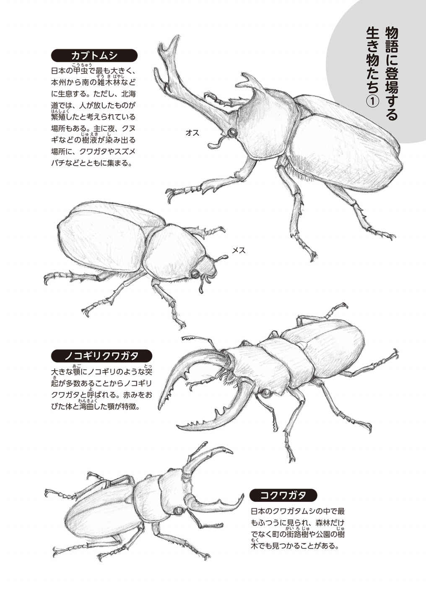

| 森里川海大好き！ | |
| 『森里川海大好き！』編集委員会 | |
| 環境省「つなげよう、支えよう森里川海」プロジェクトチーム (2018) | |
自然に親しむ ─私たちは森里川海でできている─
この本は、子どもたちに自然に親しんでもらいたいと強く願っている人たちが作ったものです。だからこの本を読んだら、次は外に出て、自然に親しんでくださいね。
自然って、もちろん森や里や川や海です。そういうところに行く、遊ぶ。そうすると気持ちがいい。雨が降 ったらどうする。雪だったらどうだ。そういうこともありますね。でも天気のいい日だってあるでしょ。
森、里、川、海に行くのもいいけれど、マンガを読んで、ゲームがやりたい。それもいいですね。今は八十歳 の私 でも、両方やります。でも森や里や川や海にも行きます。なぜって、虫がいるからです。私は〝虫とり〟が大好きなんです。嫌 いな虫もありますよ。虫じゃなくて、魚を釣 ってもいい。カニを捕 まえてもいい。小学生の頃 は、どちらも大好きでした。今は虫です。川でも海岸でも、もちろん虫とりはできます。
この本には、水の流れが出てきます。森に降った雨は、地面の中や川を流れて、やがて海に入ります。でもまた雨になって森へ落ちてきます。ぐるぐる回っているんですね。
君たちの体も、七割 は水なんですよ。その水は飲んだ水ですね。食べ物にも水がたくさん含 まれています。その水はどこから来たんでしょう。飲む水は水道からです。水道の水は、川やダムから来ます。ダムは川をせき止めて作られています。だから結局は、川の水ですね。そう、君たちの体の水は、川から来たわけです。それなら、川は君たちの体につながっていますよね。
田んぼがあります。「あれは田舎 にあるもので、自分と関係ない」。農家の子でないと、そう思うかもしれません。でも君たちはお米を食べるでしょ。食べたお米は身体を動かすエネルギーになります。車のガソリンみたいなものです。でも君たちの体も作ります。つまり、米が君たちの体の一部になるわけ。それなら田んぼは、将 来 の君たちの一部じゃないですか。そう思ったことがありますか。
魚を食べる。食べた魚の一部は君たちの体になります。魚は海の中で育ちます。それなら君たちは海を食べてるみたいなもので、さらにそれなら、海も君たちじゃないの。
海は海、川は川、自分とは違 うよ。ふつうはそう思います。でもよく考えてみると、海や川や森も、結局は自分につながっているのです。いま自分の体を流れている血は、あっちの川やこっちの川から来た水ですからね。
〝自然〟に親しんでいないと、なかなかそうは思えないのです。森や川は自分じゃない。そう思ってしまいます。そうすると、森や川にゴミを捨 てても平気になります。「自分と関係ない」と思うからでしょうね。
世界と君たちはしっかりつながっています。自然に親しんで、それを感じられるようになってくださいね。心からそう願っています。
（養 老 孟 司 ）
１ おばけ池の少年
「みどりが丘 団 地 のおばけ池には、夜な夜なおばけが出るらしい」
そんなうわさが学校に広まったのは、六月に入ってからだった。
「おばけ池におばけが出るのは当たり前だろ、おばけ池にライオンが出たらおどろけ」と、先生は冗 談 まじりにいったが、僕 たちは見たこともないおばけの話題で盛 り上がった。
誰 かがいった。
「何でもさ、おばけの正体は小学生の男子らしいぜ。おばけ池のほとりに一人でぽつんと立っていてさ、そのままふっと消えてしまうというんだ」
「だってあそこは、立ち入り禁 止 だろ。フェンスがあって、入れないじゃん」
「どっちも、おばけにゃ、関係ないことだ」
「そうか、でも、タクミ、くわしいんだな」
「ああ、隣 のおじさんから聞いたんだ」
おばけが出るのは子どもが出歩かない夜中のこと。目 撃 者 は、たいてい仕事帰りの大人だった。おばけを見たという人は数人いるらしいが、大人はこうした話を面 白 がることはなく、子どもが大げさに、より面白い話にして、うわさを広めているのだった。
「そうだ。今度、夜中にみんなでおばけ探 しにいかないか？」
「えー、やだよ」
「こわいのか、いくじなし」
「違 うよ。塾 はあるし、スイミングはあるし、そんなにひまじゃぁないってこと」
「ま、みんな忙 しいからな」
何だかんだといいながら、みんなはおばけの話で盛り上がっていた。しかし、僕は、冷めていた。
はっきりいって、おばけなどこの世にいるはずがない。それに、おばけ池は僕の家の目の前にあるのだ。毎日、勉強部屋から見ている池にそんなものがいるはずがないことは、僕が一番知っている。
それ以前に、僕は、おばけの正体にうすうす気がついているのだ。
（ユウヤに違いない。ユウヤの家はおばけ池のすぐ近くだし、あいつは大人しいくせに、フェンスを乗り越 えることなど、平気な男だ）
幼 なじみだから、僕には分かるのだ。
みんなが気づかないのは、ユウヤが四月から不登校になったからだと思う。みんなは、教室に来なくなってしまったユウヤのことを、すっかり忘 れてしまったようだった。
「おばけの写真とか撮 ったら、テレビ局が来るかなぁ」
「こわくて撮りにいけないくせに」
僕は、ノリの悪いやつと思われない程 度 にタクミたちの話に相づちを打ち、適 当 に話を聞いていた。
七月の蒸 し暑い夜だった。晩 ごはんを食べながらお母さんがいった。
「ヒロキ、おばけのうわさ知ってる？ いやよねぇ、家の前で変なうわさが立って」
僕 は大人ぶって答えた。
「うわさなんてのは、すぐに消えるよ」
するとお父さんが、興 味 津 々 の顔で近づいてきた。
「何、何、何？ おばけが出るって？」
「つまらないうわさだよ」
「何だよぉ、つまらないなんていうなよぉ」
子どものような声を出す父に、僕は、きっぱりといった。
「つまらないからつまらないの。おばけなんているわけがないだろ」
「まあまあ、そうやって、決めつけるなよ」
「まさか、いるとか思ってる？」
「うん。だって、面白いじゃん、おばけが出るなんて。ヒロキは見てみたいと思わないのか？」
「......」
僕は、父のこういうところがきらいだった。こうした話を小さな子どものように面白がらないと、すぐにつまらないという顔をする。そんな顔をされたら、まるで僕自身が面白くない人間だといわれているようじゃないか。僕はもう六年生、来年は中学生なのだ。いつまでも小さな子どもみたいなことはいっていられない。
「なあ、父さん」
「何だ？」
「おばけ池って、昔からあるのか？」
「ああ、あるよ。子どものころは、よく遊んだな」
「何して？」
「そりゃ、魚捕 りさ。メダカやドジョウ、フナやモロコもいたなぁ。あのため池からは、細い小川が流れでていて、もっぱらそっちの川で遊んだなぁ」
「メダカとか、まだいるかな？」
「うーん、もういないだろうなぁ。ヒロキはどう思う？」
「絶 滅 危 惧 種 だっていうし、いるわけないっしょ」
「難 しいこと知ってるな」
「常 識 ！」
「そうだ。それよりさ、俺 が子どものころやったスイカやトマトの盗 み方を教えてやろうか。いいか、もいでそのまま持っていくと見つかるから、いったん小川に流すんだよ。で、知らん顔して下流で待つと、プカプカ流れてくるんだ。そいつを拾って食うわけだ。こうすれば見つかっても、盗んだんじゃない、拾ったんだって、いいわけできるだろ。どう、ためになるだろ」
「役に立たない話」
「役に立てるかどうかは、お前次第だ」
「お父さん！」
くだらない父の話は、目をつり上げた母の一言でと絶 えた。僕 は夫 婦 げんかのまき添 えを食うのはいやなので、そのまま二階にある自分の部屋へと向かった。
部屋に入るとまず、窓 からおばけ池を見下ろした。おばけ池は団 地 の坂を下りきったところにあった。池と坂道との間には草や木が生い茂 り、その周りを金 網 のフェンスが取り囲んでいる。高学年なら乗り越 えることができる高さだが、乗り越えて草むらに入るもの好きな子どもなど、どこにもいなかった。
池の対岸は斜 面 が急なスロープで、二十メートルもある斜面はコンクリートで固められていた。階 段 もあるにはあるのだが、やはり、ガードレールと高いフェンスで囲まれているので、誰 も池に近 寄 ることなどできなかった。
（ほら、おばけなんかいない）
僕は池を確 かめると、マンガの本を手にベッドに横になった。僕にはマンガを読むかゲームをする以外、楽しみはなかった。壁 にかけてあるルアーロッドも、友だちとのつきあいで買っただけで、特別、釣 りが好きというわけではなかった。
一時間もしただろうか。階 段 の下からお母さんの声がした。
「ヒロキ、もう九時だから、早くお風 呂 に入りなさーい」
「はーい」と、僕は立ち上がった。しかし、窓から見えるおばけ池を見て、体が固まった。
池のほとりに、おばけが立っていたからだ。何人もの大人が目 撃 したという少年に間 違 いない。少年は白いシャツを着て、身じろぎもせずうす暗い藪 を見上げていた。
（ユウヤだ！）
僕は、懐 中 電灯を手に取ると、こっそりと玄 関 を抜 けだした。
おぼろな月が空にとどまり、団地全体をぼんやり照らしだしていた。僕は、足音を立てずに長い坂を駆 け下りた。街灯に照らされアスファルトが白く光っていた。その分、僕の影 は地上にはっきりと映 り、街灯を過 ぎるたび、伸 びたり縮 んだりを、何度も繰 り返した。坂を下りきると、僕は何食わぬ顔で自動販 売 機 の前に立った。もちろん、人に怪 しまれないためだ。白いワゴン車が目の前を横ぎっていった。
（よし、今だ）
僕は、すばやくフェンスを乗り越えると、静かに着地をした。そして、背 丈 ほどもある草をかき分け、木の陰 からおばけをのぞいた。
（やっぱり...）
おばけの正体は、予想通りユウヤだった。
ユウヤと僕とは、ずっと仲良しだった。遊ばなくなったのは、四年生のころ。みんなが、塾 やサッカーで忙 しくなり始めたころからだった。同級生のほとんどがひまな時間はゲームで過ごすという中で、ユウヤだけが浮 いていた。ユウヤはゲームもしないのだ。せめて、話ぐらい合わせればいいものを、ユウヤはそれもしなかった。
要するに、空気が読めないのだ。
だから、いつも一人ぼっちで校庭の片 隅 にいることになる。そんなユウヤが、春から学校に来なくなった。先生は、当たり前のように「ちょっとした不登校だから」といった。しかし、みんなの態 度 は冷たかった。
「いてもいなくても変わらないよね」
「要するに、ずる休みでしょ」
僕 も、そんな彼 らと同じく、ユウヤに関わることはしなかった。
そんなユウヤがここにいた。僕は（学校にも来ないやつが、夜のため池で遊んでいていいのか）というところを、問い詰 めてやろうと思っていた。
ユウヤは小さな懐 中 電灯で藪 を照らしながら、僕の方へ近づいてきた。隠 れようと思ったが、これ以上身を隠す場所はない。
（やばい！）
とっさに逃 げだそうとする僕に、ユウヤがいった。
「だめ、動かないで！」
「......」
「その木を見て...」
ユウヤの視 線 を追うと、僕が手をかけていた木にでっかいスズメバチがとまっていた。刺 されるかもしれないと、僕の頭はパニックになった。しかし、足がすくんで一歩も動けない。
「いいから、いいから。そのままゆっくりと、こっちへ来て」
「......」
「そう、ゆっくりとだよ」
僕は、さびついたロボットのような動きで、スズメバチのいる藪から脱 出 した。ユウヤが、スズメバチをのぞきこみながらいった。
「ハチはさ、巣を守るとき以外、むやみに攻 撃 などしてこないんだよ。だからおどろかさなければ、大 丈 夫 」
「本当か？」
ユウヤは、僕に見つかったことなど気にもせず、食い入るようにスズメバチをながめていた。
「へー、キイロスズメバチだ。よく見ると、ハチってかっこいいよね。機 能 美 っていうのかなぁ、すごいデザインだ」
「意味不明だし」
「どこかに巣があるんだろうなぁ。そうそう、スズメバチはさぁ、巣もマーブル模 様 でキレイなんだ」
「かっこいいとかキレイとか、お前、絶 対 おかしいよ。だってこいつは超 危 険 生物だぜ。テレビでもやってるだろ、最近、スズメバチが住 宅 地 に侵 入 してきたって」
「あはははっ、それは違 うよ。人間がスズメバチのすみかに侵入してんの」
何だか調子がくるった。ユウヤはご機 嫌 でよくしゃべる。僕 に見つかった後ろめたさとかないのか？ 押 されぎみの僕は、形 勢 を逆 転 しようと、こういった。
「ところでお前、こんな場所で何してんだよ。ここは立ち入り禁 止 だし、子どもの出歩く時間じゃないだろ」
「へへへっ」
「何がおかしい？」
「それは、ヒロキも同じだろ。そんなことより、そこ見てよ」
ユウヤはそういうと、再 びスズメバチのいた木を指差した。
「あっ、ノコギリクワガタ」
僕の胸 は高鳴った。クワガタもカブトムシも、ペットショップで買うものだと思っていたからだ。低学年のころ、虫 採 りに出かけたことはあるが、実 際 につかまえたことは一度もない。
「採ってごらんよ」
「いいのか？」
「うん」
僕は緊 張 する指先で、ノコギリクワガタをつまんだ。
「かっこいいでしょ」
「まあな...」
平静を装 ったが、指先が震 えていた。感動すると本当に手足というものは震えるのだ。
「これは柳 の木なんだけどさ、樹 液 が出ているからいろいろいるよ。団 地 のど真ん中だし、フェンスで囲まれているから誰 も知らないみたい。せっかくだから、もっと、探 そう」
そして僕はユウヤを問い詰 めることも忘 れて、クワガタ探しに夢 中 になった。おばけ池の脇 にある藪 には、数本の木が並 んでいた。僕はその一つ一つを懐 中 電灯で照らし、クワガタを探した。樹液の出ている場所では、数匹 のカナブンが蜜 を吸 っていた。
「茶色いのと、緑色のがいるんだな。こっちは蛾 か？」
「それは地味だけど、蝶 だよ。ヒカゲチョウ」
「えー、これで蝶なのか？ 地味だぜ」
「止まるとき、翅 を閉 じるのがチョウ。翅を開いて止まるのがガ」
「へー、そうなの」
「ま、大体だけどね」
「おおっ、カブトムシだ。マジすげー」
樹液に虫が集まる様子など、テレビでしか見たことがなかった。
（すごい、夜って、こんなに虫がいるんだ...）
僕 は興 奮 した。ユウヤを問い詰 めにきたのに、そのことも忘 れ、二人で虫を探 した。結局、その後、見つけたのはコクワガタ一匹 だったが、ノコギリクワガタにカブトムシ、初めての体験に僕の胸 は高鳴った。
おばけ池の脇 に僕たちは座 り、真っ暗な池をながめていた。フェンスの向こうから、街灯や家の明かりが僕たちを取り囲んでいる。何だか、このおばけ池だけが、別の世界のように思えた。
「あれ、ヒロキの部屋でしょ」
「うん。お前の部屋はあれだろ」
低学年のころは、一 緒 に遊んでいた仲だった。
「考えてみれば、池をはさんだ隣 同士だね」
そんな風に考えたことはなかった。僕はこのタイミングで、ユウヤにいろいろ聞こうと思った。
「なあ、ここへはよく来るのか？」
「うん、ときどきね」
「でも、何で夜なんだよ。虫が多いからか？」
「ううん。それはさ...、礼 儀 かな。学校へ行かず、昼間っからうろうろしてたら、見つけた大人が困 るだろ。ヒロキだって、自分が学校に行ってるとき、僕が外で遊んでたら、いい気持ちがしないだろ。不登校にも礼儀はあるんだ」
真顔でいうので、笑えた。
「さっきのスズメバチだって、黄色と黒のストライプだっただろ。あれは注意色。工事現 場 のトラ柵 と一緒だよ。俺 は毒 針 をもっているからこわいぞ、近 寄 るなって、教えてくれているんだ。そうやって考えるとハチは、礼儀正しい親切な虫だろ」
なるほどなぁと思った。
確 かに、ユウヤは小さなころから礼儀正しく親切な男だった。ユウヤが学校で一人ぼっちだったのも、空気を読んでみんなに合わせないだけで、何ひとつ悪いことをしたわけじゃない。
「虫、好きなんだな」
「もともと、そんなに好きだったわけじゃないよ。ただ、夜の散歩でここへ来るようになってからかな。いろんな生き物を見つけるとさ、何だか知りたくなるじゃん。そいつのこと」
「いろんな生き物って、虫だろ？」
「虫だけじゃないよ。ここには鳥が来るだろ、それからイタチとかハクビシンとか。カエルにイモリに...、池の中にもいろいろいる」
「えー、この池、生き物いるの？」
「アミを入れたことはないから、よく知らないけど」
「魚は？」
「メダカはいるよ。あとは...、よく分からない」
「うそ、メダカがいるのか？」
僕 は立ち上がり、懐 中 電灯で暗い水面を照らしてみた。すると、水面を泳ぐ小さな魚がおどろいて、草陰 に隠 れるのが見えた。
「ほら、今のメダカだよ」
「マジかよ...」
ついさっき、父と絶 滅 危 惧 種 だからいないと話をしたばかりのメダカが、何匹 もいた。水面にはアメンボウがつんつんと浮 かび、その下をけし粒 のような甲 虫 が横ぎった。
「あっ...」
ユウヤが叫 んだ。
「何だ？」
「ほら、そこ。石の上で目が光ってる」
僕はユウヤに寄 り添 うように、懐中電灯が照らす水中をのぞきこんだ。するとそこには、オレンジ色に光る目玉が二つあった。
「ザリガニか？」
「違 う、エビだよエビ。本で見たことはあったけど、実物は初めてだ。て、いうか、こんなところにいるなんて」
ユウヤの声を聞きながら、僕も同じことを思っていた。
（僕たちが、知らなかっただけなのだ）
「ねえ、ヒロキ。しきり直そうよ。アミを持って、また明日、ここに来よう」
ユウヤは、満面の笑みで、そういった。
僕は返事をしなかったが、心は大きく揺 れていた。そして僕たちは、このことは誰 にも話さないと約束し、別々の道で、お互 いの家に帰った。

２ 君はどうしたい？
給食の後、みんなはいつものように教室の隅 に固まり、たあいもない話をしていた。僕は、それとなく話の輪に加わった。するとみんなが僕の顔をのぞきこんでいった。
「すごいぞ、ヒロキ、最新情 報 だ。例のおばけ池の件 なんだけどさ、正体が分かったんだ」
僕の胸 は、ドクンッと音を立てた。
（まさか、こんなに早くユウヤのことがばれるとは...、ひょっとして、昨日、二人でいるところを誰かに見られたのか？）
みんなの視 線 がこわかった。
「あれはさ、池に落ちて死んだ子どもの霊 らしい。団 地 ができるずっと前に、魚捕 りをしていてあの池に落ちた子がいるんだってさ」
ほっとした。どうやら、僕 たちのことは、ばれてはいないようだ。「えっ、あの池って、団 地 ができる前からあったのか？」
「ああ、昔はこのへん、山と畑ばかりだったらしいからな。農業用のため池っていうやつ、分かるだろ？ その名残さ」
「でもさ、魚捕 りって、魚なんているのかよ」
「昔はいたらしいぜ。フナとかメダカとか」
「今は？」
「いるわけねーし。団地の池だぜ、フェンスがあって入ることもできねーし」
「だよなー」
何だか悔 しかった。みんなに、ノコギリクワガタがいたことも、カブトムシがいたことも、メダカがいたことも、エビがいたことも、全部教えてやりたかった。でも、それはユウヤとの約束だからできない。僕は何もいわず、秘 密 の味をかみしめながら、自分の席へと戻 った。
その日は、夕飯の後すぐに風 呂 に入り、コンビニに行くといって家を出た。アミとバケツは、あらかじめ車庫に用意しておいたので、それを持って坂を下った。フェンスを乗り越 えると、ユウヤが木の前で待っていた。
「待ってたよ」
「えっ、昨日は来るとはいわなかったぜ」
「でも、来ると思ってた」
何だか、見 透 かされたみたいで悔しかった。しかし、昨日の時点で、ここに来ることを僕は決めていた。
「いいから、早く捕ろうぜ。あんまり遅 くなれないし」
僕は、そうごまかして池に向かった。
まずは柳 の木の近くから。この辺は浅く、水辺に草が生えていた。ユウヤは手をいっぱいに伸 ばし、遠くから手前に引くようにアミを動かした。見たことないやり方だ。
「アミって、すくい上げるもんじゃね？」
「手前からすくおうとすると、魚は向こうに逃 げちゃうから、これが正 解 だよ。池の底を感じながら、ゆっくり引き寄 せるんだ」
ザバンッ。
ユウヤが、引き寄せたアミを引き上げた。
「あっ、すごい」
「どう、何が捕れた？」
アミの中には、数匹 の小魚と、よく分からない虫が入っていた。
「やった。これ、メダカだよ。これは、フナの赤ちゃんかな。あとは、ヤゴが二種類。ギンヤンマとサナエトンボかな？」
僕 には名前など分からないが、とりあえず自分でつかまえてみたかった。ユウヤを真 似 て、アミを遠くにザブンッとやった。
アミに伝わる水の抵 抗 。少しずつ引き寄 せてくると、池の底に石があることや、泥 があることが感じられた。そして、アミを返すと、そこには真っ赤な獲 物 がいた。
「おっ、アメリカザリガニだ」
「やったね、ヒロキ」
それから僕たちは、夢 中 でアミを動かし続けた。何度も何度も、アミを入れては引き寄 せる。獲物がいなければ、すぐに飽 きるのだろうが、いくらでも獲物が捕 れるからやめられない。
「魚捕りって、意外と簡 単 なんだな」
「この池が、すごいんだよ」
僕たちはそういって笑った。他にも分かったことがある。この池が思ったよりも、深くないということだ。特に柳 のある東側は浅く、土のスロープになっていた。ここには草が生え、小魚や虫が多かった。それ以外の岸はコンクリートで固められ、いきなり深くなっていたが、それでも水深は五十センチほどで、立てない深さではなかった。ここにも魚がたくさんいたが、アミを入れると、さっと逃 げてしまうので、ほとんど捕ることはできなかった。一番の発見は、池の周りが古い石組みでできていたことだ。小さなころから見てきた池なのに、フェンスの外からでは気がつかなかった。
「分かった。これは、昔のため池の石組みだ。おそらく団 地 ができたとき、ため池の周りをコンクリートで覆 ったんだな。だから、きっと、この池の魚は、ずっと昔からすんでいるやつらなんだよ」
ユウヤが興 奮 気味にいった言葉は、正 解 だと思った。そしてもう一つの発見は、この池に出口があったということだ。池の西側には、けっこう広いトンネルがあった。トンネルの入り口には幅 一メートルほどの堰 があり、雨で増 水 したときにあふれた水がトンネル内の水路に流れでるというしくみになっている。水路の脇 は、歩けるようになっていたが、真っ暗なので入る気にはなれなかった。
「ユウヤ、こんなトンネル、知ってた？」
「僕の家の窓 からは、見えるからね。道路からは見えないと思う」
「でもさ、不思議じゃね？ 雨も降 ってないのに、けっこうな水が流れだしているぜ」
僕の質 問 に、ユウヤは迷 わず答えた。
「たぶん、湧 き水だと思う。あの斜 面 から染 みでた水が池に入るんだよ。それが証 拠 に、あそこのコンクリート、ぬれているだろう」
確 かに、池の北側のコンクリートはいつもぬれ、コケがいっぱい生えていた。それにしてもユウヤは、何でこんなことが分かるんだろう。
「お前、何でも分かっちゃうんだな」
「想 像 だよ。正解かどうかは分からないけどね。でも、この水量は多すぎる。もしかして、ため池の中にも湧き水があるのかもしれない」
何だか、ユウヤと出会ってからはおどろきっぱなしだ。今まで見えていなかったものが、見えるようになったり、使ったことのない脳 味 噌 でいろいろ考えているような気がする。
それから僕 たちは、バケツの生き物を比 べあった。
メダカ、フナ、モツゴ、ヨシノボリ、ドジョウ、ヤゴ、ザリガニ、エビ、オタマジャクシ。名前は、全部ユウヤが教えてくれた。
「ユウヤ、この獲 物 、どうする？」
「僕は、少しだけ持って帰ろうかな」
「えっ、水 槽 とかあるの？」
「うん。ヒロキは？」
「オレは無理。こんなの持って帰ったら、母さんに叱 られちゃうよ。『夜なのに、どこ行ってたのー！』ってね。あっ、そろそろ時間だ。帰らなきゃ」
ユウヤが持って帰る魚を選んでいる間、僕はもう少し魚を捕 ることにした。足もとの石 垣 を懐 中 電灯で照らし、水中をのぞきながら歩いた。石にはヨシノボリがぺたりとついていた。こいつはお腹 のヒレが吸 盤 になっているんだと、さっき、ユウヤに聞いたところだ。ヨシノボリは、つんつんと泳いでは石の壁 に止まった。その脇 にエビがいた。エビは光を当てると、まぶしそうに後ずさった。光がきらいなんだろうか。しつこく照らすと、石垣のすきまに入りこみ、出てこなくなった。アミでつかまえなくても、こうした生き物の動きを見ているだけで、飽 きることはなかった。
しばらく行くと、柳 の手前の浅 瀬 でタニシを見つけた。黒くて大きな殻 を背 負い、カタツムリのように、のったりと水の底を歩いている。池の底にはタニシの歩いた跡 が、道のように残っていた。
（よし、つかまえてやろう）
ぬれた石に足を置き、懐中電灯で照らしながら、アミを伸 ばしたときだった。水中を大きな影 が横ぎった。
「うわぁ！」
おどろいた僕は、足をすべらし、そのまま浅瀬にしりもちをついた。
ジャバーン。
「あわわわっ」
必死で池からはいだした僕のところへ、ユウヤが血相を変えて駆 け寄 ってきた。
「どうした、大 丈 夫 か」
「ヘビ、ヘビ、ヘビがいた！」
「ヘビ？」
「池の中に...、真っ黒で、こんなでかいやつ」
僕は動 揺 していた。この目で水中を泳ぐ巨 大 な生き物を見たのだ。腕 ほどの太さがある、黒くて、とても長い影。
「水中？ ヘビは水に浮 くはずだけど...」
「見たんだよ、本当に」
「信じる、信じるよ。でも、何なんだろうなぁ」
ユウヤが信じるといってくれたので、僕 は落ち着きを取りもどした。しかし、冷静になったとたん、大問題に気がついた。全身ずぶぬれ、ズボンは泥 だらけ。この格 好 で家に帰ったら、『何してたの、どこに行ってたの』という、母さんの質 問 攻 撃 を避 けることはできない。
「どうしよう...」
困 り果てた僕に、ユウヤがいった。
「大 丈 夫 、とりあえず僕の家においでよ。作戦がある」
僕たちは、おばけ池の北の斜 面 にあるコンクリートの階 段 を登って、ユウヤの家に向かった。
広い玄 関 で僕が待っていると、ユウヤがお母さんを連れて二階から降 りてきた。ユウヤのお母さんは、黒のタンクトップに細身のジーンズ姿 。長い癖 毛 を後ろで束ねている様子は、僕の母とはあまりに違 い、まるで、ロックミュージシャンのようだなと思った。
「あらま、すごいことになっちゃったんだねぇ」
ユウヤのお母さんは、笑いながらそういった。
「すいません、こんな夜遅 くに」
「いいの、いいの。余 計 な心配はいらないから。それよりもだ、ユウヤから事 情 は聞いたんだけど、君はどうしたい？」
「......」
すぐに返事ができなかった。
「服は洗 えるけど、すぐには乾 かないし」
ユウヤがいった。
「乾 燥 機 に入れたら？」
「それでも、一時間はかかるわよ。それに君たちの心配は服なの？ それより夜遊びをうちの人にばれるのが困るんでしょ。洗いたての服を着て帰ったら、それはそれで怪 しまれるわよ」
「分かっちゃうかなぁ？」
「親をなめないでよ。ズボンについた泥や、草の種で、君たちがどこで遊んできたのか、何をしてきたのかなんて、全部お見通しよ」
（どうしよう...）
困り果てた僕に、ユウヤのお母さんはいった。
「よし、今日はうちに泊 まっちゃいな。そうすれば、全部解 決 。証 拠 隠 滅 もできるしね」
「えっ、いいんですか」
「遠 慮 はいらないよ。君が困らなければ、問題なし。ユウヤも、それでいいんでしょ」
「ああ」
「じゃ、電話すっか。ヒロキの母さんなら知ってるし。私 が話をしてあげるから、君もちゃんとお母さんに頼 むんだよ。分かった？」
「はいっ！」
礼 儀 正しく返事をする僕 を見て、ユウヤはニヤニヤと笑った。
結局、僕はユウヤの家に泊 まることになった。ユウヤのお母さんは、さっきとは別人のようなていねいな口調で僕の母と挨 拶 をかわし、コンビニで話しこんだら盛 り上がってしまったとウソをついて、この話をみごとにまとめ上げた。
僕はユウヤのスウェットに着 替 え、リビングで冷たい麦茶を飲んでいた。
「すごいでしょ、うちの母さん」
「うん、圧 倒 された」
「ちゃんと裏 と表のある人間になりなさいってのが、口 癖 なんだ」
「何だそれ。普 通 は、裏のない人間になりなさいだろ」
「普通じゃないんだよ、あの人は。裏だけ、表だけじゃ、人間は幸せになれないんだってさ。裏も表も大事にしなさいが口癖。変だろ」
変だとは思う。しかし、何か納 得 できる。
「ううん、何かかっこいいよ」
本当にそう思った。さっき、あの状 況 の中で、ユウヤのお母さんは、僕にまず『君はどうしたい？』と聞いたのだ。自分の母さんだったら、ああしなさい、こうしなさいというだけで、あんな風にたずねることはしない。
「ふーん、そんなもんかなぁ」
しばらくすると、ユウヤのお母さんが、洗 面 所 から帰ってきた。
「よしよし、あとは洗 濯 機 が全部やってくれるよ」
「ありがとうございます」
僕がお礼をいうと、ユウヤのお母さんは食 器 棚 の引き出しから、タバコを取りだして火をつけた。
「いいの、いいの。うちはこの子と二人っきりだから遠 慮 しないで。
それにね、こっちが感 謝 してるんだから。この子、いっちょまえに不登校とか決めこんでんじゃない。人間ぎらいになったんじゃないかって、心配してたのよ」
ユウヤがいった。
「何、そのいい方。六年生にもなったんだから、学校へ行くか行かないかは自分で決めろっていったの、母さんじゃん」
「いったけどさ、本当に行かないとは思わないじゃない。あははっ、ねえ、この子、変わってるでしょ」
「......」
返事に困 った。変わっているとは思っていたが、お母さんの方が変わっている。
「ほら、ヒロキが困っているだろ」
「はいはい。まあ、夜中に連れてくる友だちがいるんだから安心ね。ほっとしたわ。母さんは二階で仕事してくるから、あんまり夜ふかしするんじゃないよ」
ユウヤのお母さんはそういうと、軽い足取りで階 段 を上がっていった。
「こんな時間まで仕事？」
「こんな時間から仕事さ。雑 誌 のライターなんだよ。だから、仕事中に話しかけないのが昔から僕 の親 孝 行 。さ、僕の部屋に行こうか」
部屋に入るとユウヤは、池から持ってきた小魚を水 槽 に放した。何でもこの水槽は、以前、金魚を飼 っていたときのもので、今日の昼間、新しい水を入れ、ろ過 器もセットしたらしい。
水槽に入れられた魚たちは、しばらく右 往 左 往 していたが、やがて落ち着きを取りもどし、メダカはメダカ、フナはフナというように、小さな群 れを作った。
「へー、メダカの目玉って、白目の上の方が青いんだ」
「モツゴって、口が上を向いてるぜ。変なの」
バケツでは、よく見えなかった魚の顔が、はっきりと見えた。
「おっ、ドジョウが砂 に潜 った」
「見て見て、砂から目玉だけ出してる」
僕たちは、この小さな水族館を飽 きることなくながめ、小さな魚のかわいい動きに歓 喜 の声を上げた。
しばらくすると、ユウヤは何かを思いだしたように本 棚 に向かい、分 厚 い図 鑑 を持って机 に向かった。
「魚類図鑑？」
「うん、ちょっと、気になることがあってね」
それからユウヤは黙 りこみ、本を読み続けた。しかたがないので、僕は床 に横になり、水槽を見上げながらぼんやりと考えた。
つかまえた魚のこと、おばけ池のトンネルのこと、湧 き水のこと、そして、目の前を横ぎった大きな黒いヘビのこと。
（いったい、あれは何だったんだろう？）
ユウヤのことも考えた。
頭もいいし、悪いやつじゃないのに、どうして学校に来ないんだろう。果たして学校に来る気はあるんだろうか。ユウヤのお母さんは、そのことをどう思っているんだろう。
いろんなことを考えすぎて、頭の中がぐるぐるした。考えても分からないことばかりだ。分かったことといえば、おばけ池にメダカやフナがいたことだけだ。でも、それだけでも、誰 も知らない発見だ。
僕は、濃 密 な一日に疲 れ果て、そのまま眠 ってしまった。
「ヒロキ、ベッドで寝 ようぜ」
そういって、僕を起こしたのはユウヤだった。時計を見ると、もう午前０時だった。僕は二時間も寝てしまったことになる。うす暗い部屋に、デスクライトだけがこうこうと灯 っていた。
「ずっと。本を読んでいたのか？」
「まあな。そんなことより、大発見」
「大発見...？」まだ、しっかりと目が覚めていなかった。
「ヒロキの見た黒いヘビの正体だよ。あれは、きっとウナギだ」
「ウナギって、海の魚じゃないの？ それに、生きたウナギはウナギ屋さんで見たけど、あんなに大きくなかったぞ。僕 の見たのは腕 より太かったんだぜ、こーんなに、でかかったんだ」
両手を広げる僕に、ユウヤが図 鑑 を差しだした。
「ここ、見てよ」
ウナギ。ヘビのように体を横にくねらせて推 進 力 を得るため遊泳速度は遅 い。池から川、汽 水 域 まで、どこにでも生息。嗅 覚 はイヌに匹 敵 するほど優 れており、甲 殻 類 や魚を丸呑 みする。
一 般 的 に淡 水 魚 として知られているが、海で産 卵 ・孵 化 を行い、淡 水 にさかのぼってくる。産 卵 地は日本から２０００㎞も離 れたマリアナ諸 島 沖 、幼 魚 は日本まで旅をして川を上る。成 熟 するのに10 年、寿 命 は産 卵 をしなければ80 年といわれるが、詳 しいことは判 明 していない。体長は１００㎝を超 える。
ユウヤの指は、最後の一行を差していた。
「体長は百センチを超える...」
「どうよ、おばけ池にアナコンダがすんでいるっていうより、うんとリアリティがあるでしょ」
「だけどさ、ウナギって、本当に一メートルにもなるのか？」
「うな丼 になる五十センチくらいのは、まだまだ、子どもだったみたいだな。僕もあれが大人だと思ってたよ」
「うーん。まだ信じられねーや」
「だからさ、確 かめようよ、二人で」
「確かめるって？」
「もちろん、つかまえるんだよ」
ユウヤのこの提 案 を、断 る理由はどこにもなかった。
僕たちはベットに横になり、大ウナギ捕 獲 への夢 をふくらませた。明日は土曜日で学校は休みだ。あと一週間もすれば、夏休みになる。
３ トンネルを抜 けたら
夏休みに入ると、僕 たちは昼間から大手を振 って遊ぶことができた。
「久 しぶりだな。こんな風に歩くのは」
ユウヤがまぶしそうに、空を見上げていった。三か月もの間、夜しか出歩かない生活は、さぞかし退 屈 だったに違 いない。僕はユウヤに聞いてみた。
「お前さ、家の中で、毎日、何をしてたんだよ？」
「何してたんだろうなぁ、部屋の中で本を読んだり、映 画 を見たり...、よく覚えていないや」
「退屈だったろ？」
「そうでもないよ。あっ、そうだ。一つだけ分かったことがある」
「何、何？」
「勉強ってさ、学校より、家でやった方がはかどるみたい。教科書はもう、みんなより、ずいぶん進んじゃったよ」
何て、かわいげのないやつだ。普 通 、不登校になんてなったら勉強の遅 れを気にするところなのに、こいつは家にいながらも、一人で学校の勉強をしていたに違いない。しかし、そんなところが、ユウヤらしいなと思った。
「さて、行くか」
僕たちは、これから、おばけ池のトンネル探 検 に行くのだ。
いつものように自動販 売 機 の前であたりを見わたし、まず、持ってきたアミをフェンスの向こうに投げこんだ。昼間、ここへ来るのは初めてなので、いつもより緊 張 する。車の通りも多いし、フェンスに貼 られた『立ち入り禁 止 』の看 板 も目立つ。
「よし、今だ！」
僕たちは、車がとぎれた瞬 間 に、五秒でフェンスを乗り越 えた。そして、すばやく草むらに身を隠 した。
「いいか、トンネルまでは三十メートル。一気に駆 けこむぞ」
草むらからトンネルまでは、何一つ、隠れる場所はない。ここは覚 悟 を決めて、走りきるだけだ。
「行こう！」
駆けだしたユウヤについて、僕も全速力で走った。たった数秒のことだが、人に見られたらすべてが終わる。立ち入り禁止の場所で子どもを見つけたら、大人たちは学校や警 察 に電話をするに違いない。だから、必死だった。
「ゴール！ 大 丈 夫 か？」
「うん、誰 にも見られてないはず」
はあはあと息をきらせながらも、お互 いに笑みがこぼれた。
トンネルの中はうす暗かったが、何とか歩いていけるようだった。
「出口が見えないな」
「ま、行けるところまで行ってみよう」
さらさらと流れる水路の脇 を、僕 たちはゆっくりと歩いた。水路は、コンクリートのマスで、水は三センチほどの深さだった。何の変化もなく、ただ水だけが均 一 に流れていた。
「これじゃ、魚なんていないな」
ユウヤのつまらなそうな声が、トンネルの中に響 きわたった。
下り坂のようなトンネルをさらに進むと、水路はゆるく左にカーブしていた。カーブを進むと、だんだんあたりが暗くなり、振 り返ると、もう入り口は見えなくなっていた。
「探 検 っていうより、こりゃ、きもだめしだな」
「おっ、ヒロキ、心細くなってきたの？」
ユウヤが冷やかすので、僕はやつを追い越 していい返した。
「ばーか、俺 は夜のおばけ池で遊ぶ男だぜ。こんなトンネル平気に決まってるだろ」
「あはははっ、確 かにね」
でも、分かっていた。僕がおばけ池に行けたのは、そこにユウヤがいたからだし、このトンネルを進めるのも、隣 にユウヤがいるからだ。一人だったら絶 対 無理。それ以前に、入ろうとも思わない。
そのときだった。僕の前方に黒いかたまりが三つ見えた。かたまりはコンクリートの低い天 井 にぶら下がっている。
（何だろう？）
このまま行けば頭に当たる。しかし、動きもしないので気にせず歩いていくと...。
「うわぁ！」
あまりのおどろきに、僕は後ずさり、後ろにいるユウヤにぶつかった。
「どうした、ヒロキ、どうした？」
「あれ、あれ、あれ！」
黒いかたまりには、みにくい顔があった。
「うわぁ、コウモリだぁ。すごーい！」
（おいおい、そこは一 緒 にこわがるところだろ）
僕はしりもちをつきながら、そう突 っこみを入れた。しかし、相手はユウヤだからしかたない。危 険 な生き物も、気持ちの悪い生き物も、何でもかんでも「面白い」というやつなのだ。案の定、ユウヤはいった。
「見て見て、面白いよ。かわいいけど変な顔。それにしても、こいつ、本当に逆 立 ちして寝 るんだな。マンガみたい。へー、爪 で止まるんだ。でもさ、こんな平らなコンクリートに、よくつかまれるもんだね。寝 相 が悪くて落っこちたりしないのかなぁ」
興 奮 するユウヤを見ていたら、何だか笑いがこみ上げてきた。
「よいしょっと。そいつ襲 いかかってこないのか？」
「大人しそうだよ」
「血とか吸 われないか？」
「吸 血 コウモリは、日本にはいないよ。よく見るイエコウモリより少し大きいから、きっとヒナコウモリだと思う。それにしてもすごいよな、こんなところで、コウモリが寝 ていたなんて大発見だ」
少しこわかったが、僕 もコウモリを観察した。
ユウヤのいうように、コウモリは変な顔だった。目は真っ黒で麻 の実のように小さい。そのくせ耳はメッチャでかい。
「超 音波を聞きとるためかなぁ？」
「たぶんね。だけどさ、面白いよね。みんな、コウモリが超音波で虫を捕 ることは知っているくせに、こんなところで寝ているなんて知らない。図 鑑 には木のうろで寝るって書いてあるからね」
確 かにその通りだ。こんなの学校の先生だって知らないはずだ。
ユウヤが静かに指を伸 ばして、コウモリの背 中 をさわった。
「おおっ」
「どうした？」
「ヒロキもさわってごらん、そうすれば分かる」
こんなのさわりたくはなかったが、弱虫と思われるのはいやだ。僕も恐 るおそる指を伸ばし、コウモリをさわってみた。
「どう？」
「うわっ、毛が生えている。で、あったかい」
これはおどろきだった。何だか、ネズミのような感じ。
「やっぱ、さわってみなきゃ、分かんないよな」
それから僕たちは、またトンネルの先を目指した。ユウヤは、コウモリを一匹 持って帰るといいだしたが、それは帰りにすればいいと阻 止 した。だって、こんなのを手にしたら、気が散って探 検 どころではなくなってしまう。しばらく歩いたが、トンネルの出口はなかなか見えてこなかった。僕は心配になっていった。
「このトンネル、本当に出口はあるのかなぁ」
「入り口があるんだから、出口もあるでしょ。でも、最悪なのは、このトンネルが地下の下水につながっていた場合だよね。そしたら、この冒 険 もおしまい」
ユウヤが、後ろでそう答えた。
実はこのトンネル探検には、意味があった。この前見た巨 大 生物が、もしウナギであるのなら、ウナギがどこから来たかが気になった。図鑑には、ウナギは海で産まれて川をさかのぼるとあった。
（果たしておばけ池は、ちゃんと海につながっているのだろうか？）僕たちは、そんな素 朴 な疑 問 をいだいたのだ。もし、つながっていなかったら、あのウナギは海に帰ることができないことになる。
しばらく歩くと、トンネルの勾 配 がだんだんきつくなった。そして、周りが少しずつ明るくなり、やがて遠くに出口が見えた。
「出口だ！」
僕 たちは、だんだん早歩きになった。
「あの向こうはどうなっているんだろう」
自然と駆 け足になった。小さかった出口の光が、どんどん大きくなってくる。そして、僕たちは、その光の中に飛びこんだ。
「うひゃぁ、まぶしーっ」
そこには、きれいな小川があった。川の向こうには背 の高い木が立ち並 び、キジバトの鳴き声が響 いていた。トンネルを流れでた水は岩 盤 にぶつかり、岩 肌 をぬらしながら川へ流れこんでいる。その岩のすぐ向こうには、こじんまりとした淵 があった。
「小さな滝 つぼみたいだな」
「そうか。大雨のときあふれだした水が、一気にここへ流れでるんだ。だから、ここだけ掘 れているんだよ、きっと」
毎度のことながら、ユウヤの分 析 力 には舌 を巻 く。感心しながら滝 つぼの中を見ると、そこにはおどろくほどの魚がいた。
「あっ、魚だ...。すげぇ！」
百とか、二百とか、そんな数ではない。数千、数万の小魚が重なりあうように群 れていた。川の底には大物もいる。こんな魚を目の当たりにして、じっとしていられるわけがなかった。
「行こう！」
「うん！」
僕たちは、アミを手に岩盤の上から淵の中に飛びこんだ。
ガッボーン。
穏 やかだった水面に僕たちの足が突 き刺 さると、白い水しぶきが高く跳 ね上がった。その向こうに、弾 けるようなユウヤの笑顔があった。おそらく僕も、あんな顔をしているのだろう。
「ぎゃはははっ」
意味もなく、笑い声を上げていた。
「ん？ ヒロキ、砂 の中に足を突っこんでみてよ」
僕はいわれるままに、淵の底のふかふかした砂に足を突っこんだ。
「うはっ、冷たい！」
砂の中に冷たい水を感じた。ユウヤの話では、川には二つの流れがあるという。一つは地上を流れる目に見える流れ、もう一つは、地下を流れる目に見えない流れ。
「伏 流 水 というんだ。ここは川底が掘れているから、伏流水が湧 きだしているんだよ」
なるほどなぁと納 得 したが、僕の体は勝手に浅 瀬 に向かっていた。
飛びこんだと同時に、淵の魚が消えたからだ。浅瀬の草陰 に隠 れたに違 いない。草の奥 にアミを置き、上流から足で魚を追いこんだ。
ガサガサガサ。
「よし、入った！」
でっかくて腹 の赤い魚だった。体の中央には紺 色 のラインが一本、ヒレは黄色く見えた。
「おっ、カワムツのオスだ」
「何でオスって分かるの？」
「この色は婚 姻 色 っていってさ、オスだけに現 れるんだ。モテたい男のお化 粧 なんだ」
「キモッ、男のくせに...」と、いいかけて気がついた。「そういえば、鳥も、きれいなのは、ほとんどオスだ...」
「そう、みんな女にモテたいんだよ」
「でもさ、婚姻色の出ない生き物もいるだろ」
「そういうやつは、セミや、カエルのようにオスだけが鳴いてメスを誘 う。他には、イモリやタガメのようにダンスをするやつもいる」
「あはっ、変なの」
「変なことないよ。生き物のオスはみんなモテたくて必死なんだ。僕 たちも数年したら、化粧して駅前でダンスを踊 ったり、ギターを持って歌ってるかもね。そうだ、二人でバンドでも組もうか？」
「あはははっ、よせやい」
僕は笑ってごまかしたが、本当にユウヤの言葉には、教科書とは違 う説得力があると思った。
それから僕たちは、話もせずに、本気で魚を追いかけた。
バケツを持ってこなかったので、岸辺の砂 に穴 を掘 り、石で囲んでいけすを作った。つかまえた魚は、全部いけすに入れた。
つかまえては魚をながめ、またつかまえては魚をながめる。そんなことを繰 り返すうちに、時間だけがどんどん経 った。
「ユウヤ、俺 、発見したぜ」
「ん？ 何を」
「カワムツは草に隠 れるけど、ヨシノボリは石に隠れる。魚によって、隠れる場所の好みが違うみたいなんだ」
「おっ、面白い。そんな風に考えたことなかったよ。確 かに、そういえばそうだね。じゃ、砂に隠れるのは？」
「そんなのいるのか？」
「よし、やってみよう」
ユウヤの指 示 で、僕は浅 瀬 に二つのアミを構 えた。アミの上流は砂 地 で、泳いでいる魚の姿 はない。この砂の中からユウヤが魚を追いだし、僕がアミを上げるという作戦だ。
「行くぞー」
ユウヤが五メートルほど上流から、足で砂をかき混 ぜながら下りてきた。川の流れに砂 煙 が上がり、そのにごりがアミの中を通 過 した。（果たして、砂 の中から魚は出てくるのだろうか？）ユウヤの足がアミの前まで来たとき、僕 は二つのアミを持ち上げた。
「おっ、何だこれ？」
二つのアミの中には、キラキラした白っぽい魚と、平べったい虫が数匹 入っていた。
「すごい、カマツカだ。カマツカは別名スナモグリっていうんだけどさ、本当に砂に潜 ってるんだぁ。ほら、こいつの背 中 、砂の色と一 緒 」確 かにカマツカの背中は保 護 色 で、砂と同じ色をしていた。
「もっとすごいのは、こいつだよ」ユウヤが指を差した。
「何これ？ 枯 れ葉みたいだけど」
「ヤゴだよ」
「えっ、この前のヤゴと、ぜんぜん形が違 う」
「この前のはギンヤンマ、こいつはコオニヤンマのヤゴ。まさか、砂の中に潜るなんて、本には書いてなかったぞ。すごいや」
ユウヤは興 奮 しながら、獲 物 をいけすに運んでいった。僕はちょっと悔 しかった。ユウヤのように生き物の名前や価 値 を知らないので、あんな風に興奮ができない。
（やっぱり、図 鑑 でも読もうかなぁ）
そう思いながら、アミを置き、砂の中をガサガサやった。すると、ミミズのように細長い魚が、一匹 アミに入った。
（やったぁ！ ウナギだ）
魚の名前は知らないが、このくねくねした動きは、他の魚とはぜんぜん違うから分かる。僕は、興奮を抑 え、ユウヤにいった。
「ひょっとして、これ？ ウナギか？」
ユウヤはアミをのぞきこみ、真 剣 な顔で僕にいった。
「ウナギじゃない。こいつはヤツメウナギだ」
「何だ...」
ちょっと、残念だ。しかし...。
「おいおい、何がっかりしているんだよ。ここじゃ、ヤツメウナギは超 絶 滅 危 惧 種 なんだ。ある意味、ウナギよりも大発見だよ」
「本当か？」
「本当さ。すごいよ、あー、この川は、大発見だらけだ」
どのくらい遊んだだろうか。僕たちは疲 れ果てて、岩 盤 の上に座 っていた。
「うーん、魚捕 りってやつは難 しい」
「何いってるんだよ、いっぱい捕ってたじゃん」
「最初に淵 で見た大物は、ほとんど捕れてない」
「へへへっ、ついこの前、ザリガニ一匹で大喜びしていたのに。人間というのは変われば変わるもんだ」
「ふんっ、ばかにすんなよ。向上心があるといってくれ」
ユウヤは、僕 の顔を見てニヤニヤと笑った。
「それにしても、ここはどこなんだろうなぁ？」
魚捕 りに夢 中 になり、すっかり忘 れていたが、それは重要な問題だった。僕はトンネルの横の斜 面 を登り、森の奥 をながめた。木々がじゃまをして、周りは見えない。しかし、一か所だけ、枝 の間から黒い屋 根 瓦 が見えた。
「あっ、建物があるぞ。...そうか、分かった。神社だ。ここは稲荷 神社の森の奥 だよ」
突 然 、ユウヤが立ち上がり、川の中を上流に向かって歩きだした。僕も斜面を駆 け下りて後に続いた。しばらく行くと、コンクリートブロックの壁 に川は行く手をはばまれた。壁の高さは十メートルもあるだろうか。川はそこで、不自然に断 ちきれていた。
「ほら、上を見てよ。道だ、ガードレールがある」
「ということは...、分かった！」
僕たちの位置が、神社と道路との位置関係でつながった。
「そうか、一 里 川 だ！」
おばけ池と一里川がつながった。
一里川というのは、その名の通りたった四キロの短い川で、下流は、仁 の川 という一級河 川 にそそいでいる。一里川の源 流 は稲荷 神社の奥 の湧 き水というのが、学校で習った僕たちの常 識 だった。しかし、実 際 はそうではなかったようだ。
昔、おばけ池から流れでた水は、団 地 の丘 をぐるりと回ってここに流れていたのだろう。しかし、そこが埋 め立てられて広い道路になった。そこで、おばけ池からあふれる水を流すトンネルを作ったというわけだ。
「こりゃ、川のバイパス手 術 だな」
ユウヤが大人びた顔でそういった。
「だけど、これで、おばけ池と海とがつながったぜ」
「うん、一里川が四キロ、仁の川が海まで十五キロ。合わせて二十キロで海まで行ける」
「二十キロって、遠いのか？」
「自転車で、一時間ちょいかな」
「なあ、今度、海まで冒 険 に行かない？」
「いいね、いいね。それより、帰りは神社の方から行ってみようよ。どこに出るのか見てみたい」
それは僕も考えていたことだ。僕たちは滝 つぼに戻 り、そこから川を下流に下った。
結局、川の両岸は木や草で覆 われ、どこからも上がることはできなかった。要するに川に近づく道がないのだ。しかし、この事実は僕たちにとって、嬉 しいことだった。
「滝つぼのことは、誰 も知らないね」
「うん、川の中を歩く変わり者は、いないからな」
僕 たちは、ここを夜のおばけ池に続く『秘 密 の遊び場』に決めた。そして、神社の前にある洗 い場から岸に上がった。それから、石の階 段 を上がり、大きな鳥 居 の横を通り、一 里 川 にかかる小さな橋をわたった。目の前には広がる田んぼと、大きな道路につながる砂 利 道 があった。僕たちはこの砂利道をふざけながら歩いた。
このあたりに田んぼがあることは知っていたが、こんな風に歩いたことはなかった。いつも車の中から見ていただけだ。ユウヤが意味もなく駆 けだしたので、つられて僕も追いかけた。そして、広い道路に出ると、僕たちは並 んで歩いた。前方には、僕たちの住むみどりが丘 団 地 の広い丘があった。
坂の入り口で、ユウヤがガードレールの向こうを見ていった。
「ここだよ、この奥 が秘密の滝 つぼ」
「へへっ、昔はこの道路の下に、川があったんだなぁ」
僕は、父が子どものころ遊んだという川の上を、ユウヤと二人で歩いた。
４ 一匹 では生きられない
それから二週間、僕たちは毎日のように会い、何度も一里川の滝つぼへ出かけた。おばけ池からのトンネルルートは使わず、少し遠回りでも道路を使った。こそこそと人目を避 けていくスリルも捨 てがたかったが、大ウナギを釣 るまではリスクは避けたかった。
今日は朝から、どしゃぶりの雨。
予定を変 更 し、僕の部屋で作戦会議となった。ユウヤが、棚 の水 槽 をながめていった。
「へぇ、水槽が三つもあるんだ」
「百 均 の水槽だけどな」
「これはクワガタで、これはザリガニ、ん、これは？」
「魚水槽なんだけど、昨日全部死んだ」
「全部？」
「水槽が小さいから、一匹死ぬと水が腐 って全部死ぬんだ。もう、臭 くってまいったよ。それ以上に、母さんがうるさくって」
「ま、それはしかたない。......おっ、ヒロキも図 鑑 を読んでるんだ」
ユウヤが、机 の上の淡 水 魚 図鑑を見つけた。
「何でもかんでも、ユウヤに聞いてばかりだからな。でもさ、面白いんだ。分 厚 くて読む気にもなれなかったんだけど、つかまえた魚のページは頭に入る」
「あはははっ、そんなもんだよ。僕だって図鑑を広げるのは答えあわせのようなものさ」
「答えあわせ？」
「前にもいったろ、知 識 より体験だって。それよりさ、大ウナギ釣りの計画をそろそろちゃんと立てないと」
「うん」
これまでにも僕 たちは、ウナギ釣 りの話を何度もしてきた。どんなエサがいいとか、どんな仕 掛 けがいいとか、釣り上げたらどうするかとか。そんなことを想 像 するのは、時間を忘 れるほど楽しかった。しかし、計画はいっこうに進まなかった。
何しろ、僕もユウヤも、釣りの経 験 がほとんどない。おまけに、大ウナギがおばけ池のどこに潜 んでいるのかも分からないのだ。何とか攻 略 の糸口をつかもうと、夜のおばけ池にも行った。しかし、あの日見た大ウナギの姿 を確 認 することはできなかった。
（果たして、僕が目 撃 したのは、本当にウナギだったんだろうか？）
そんな気持ちにすらなってくる。
「本当に、大ウナギなんているのかなぁ？」
「おいおい、唯 一 の目撃者が、弱音を吐 いてどうするの」
「だって、ぜんぜん見つかんないじゃん」
「そりゃ、ウナギだって、見つからないように隠 れてるんだよ」
かなりのお手上げ状 態 だったが、ユウヤが僕だけが見たウナギを『いる』と信じてくれていることだけが救いだった。
トン、トン、トン。
階 段 を上る足音が聞こえ、父さんが部屋に入ってきた。
「よっ、スイカ、食うか？」
「ありがとうございます」
ユウヤが緊 張 気味にお礼をいうと、父さんはスイカをのせたお盆 をテーブルに置き、そのままどかっと床 に座 った。
「ええっ、父さんもここで食べるの？」
「いいじゃん、楽しそうだし。なぁ」
ユウヤが、ぺこりと頭を下げた。
「ごめんな、うちの父さん、空気が読めなくて」
僕がそういうと、ユウヤが答えた。
「大 丈 夫 、僕も空気が読めないから」
しまったと思った。ユウヤが不登校になる前、クラスの仲間はユウヤのことを、空気が読めないやつと呼 んでいたのだ。僕はそれを口にはしていないが、心の中では同じように思っていた。同 罪 だと思う。僕が黙 っていると、父さんが話しだした。
「だいたいだな、『空気を読め』だなんて誰 がいいだしたんだ。そんなのはいつも、多 数 派 の暴 力 だ。いちいち空気を読んでたら、自分の意見なんていえないよなぁ。そんなこというやつらは、一生、いいたいこともいわず、やりたいこともやらず、びくびくしてればいい」
父さんの言葉は、僕 の胸 に突 き刺 さった。
「俺 にいってる？」
「ううん。だって、お前は今、好きなことやってんだろ」
ドキッとした。そして、ユウヤのお母さんのいった「親をなめないでよ」という言葉を思いだした。
（父さんは、ここ最近の僕の行動に、何かを感じているのだろうか？ ひょっとして、作戦がばれた？）
ユウヤが、話題を変えるように父さんにいった。
「あっ、そうだ」
「何だ？」
「おじさんは子どものころ、おばけ池や一 里 川 で遊んだんだよねぇ」
「うん、遊んだよ」
「そのころウナギって、いましたか？」
「ああ、けっこういたなぁ。子どもにゃ、なかなか捕 れない魚だけど、鉛 筆 みたいな細いやつは、うじゃうじゃいたよ」
「うじゃうじゃ？」
「ああ、夏になると堰 の下に真っ黒になって固まっていたよ。山ほどつかまえて小学校のニワトリに食わしたくらいだ。ここは海が近いからなぁ」
初めて聞く話だった。僕は、身を乗りだして聞いた。
「近いって、海まで二十キロもあるよ」
「ウナギはすごいんだよ。あいつら、寿 命 は長いし、生命力は強いからな。川なんて五十キロでも、百キロでも平気で上るさ。それが証 拠 に、日本中、河 口 から山の上のため池まで、どこにでもいるだろ。本当にあいつらは強い魚だ」
「強いって、ウナギは絶 滅 危 惧 種 だろ」
「それとこれとは話が別だ。弱いから絶滅しかけてるわけじゃない。まあ聞けよ。俺が子どものころ、家で飼 ってて長生きしたのは、ウナギと、フナと、メダカだぞ。ウナギはエサもやらないのに、水 槽 で半年以上平気だったし」
「マジ？」
「マジ。メダカなんかさ、外に置きっぱなしのおけの中で五年も生きてた。後で気がついたんだけどな、メダカの寿命は一年らしい。どうやら、おけの中で卵 を産んで世代交代してたみたいだ」
「飼ってて、気がつかなかったのかよ？」
「ばーか、つかまえるのが子どもの仕事だ。観察なんてするかよ。でも、おけの中で増 えるなんて強い魚だろ」
「すごい！」と、ユウヤがいった。
「ん？」
「おじさんの話、面白い。図 鑑 に書いてあることより百倍面白い」
父さんは、普 段 、誰 からも褒 められたことなどないので、かなり動 揺 した様子だった。
「まあ、ウナギにエサやらないなんて、図 鑑 には書けないよな」
「そうじゃなくてさ、ウナギは海に下るとき、自ら断 食 するんだって。普 通 の魚はエサを食べないと衰 弱 するんだけど、ウナギは食べないことで筋 肉 に脂 をため、生 殖 巣 が成 熟 するんだって」
「図鑑に書いてあったのか？」
「うん。でも、おじさんはさ、図鑑なんか見なくても、ウナギが断食できることを知ってたんだ」
「ま、まあな...」
たぶん父さんは、ユウヤのいっていることが半分も理 解 できていないはずだ。しかし、褒められていることだけは感じたようだ。
「で、おじさん。大きなウナギって、どうやって捕 るの？」
「まあ、竹 筒 のわなをしかけたり、釣 りをしたりするんだろうけどなぁ。簡 単 なのは、穴 釣 りかな」
「穴釣り？」
「ウナギには、決まったねぐらがあるんだよ。それは、石の下だったり、アシの根もとだったり、泥 の中だったりするんだけどな。あいつらが特に好きなのが、石 垣 の穴 」
石垣と聞いて、僕 とユウヤは目を合わせた。おばけ池には、石垣がある。確 か、穴もあいていた。
「どんな穴がいいの？」
「そいつは、勘 だな。ウナギの出入りしそうな穴を想 像 するんだ。大きすぎてもだめ、小さすぎてもだめ。まあ、ウナギの気持ちになって考えるんだな。そうそう、運がいいとな、穴の入り口にザリガニの殻 が落ちていることがある。こんな穴は、要注意だ」
「それって、まさか...」
「ああ、ザリガニはウナギの大好物だからな。ほかにも、アユだろ、ドバミミズだろ、小魚でも何でも食うな」
「で、釣り方は？」
「そいつは、簡単だ。針 に太い糸をつけてさ...。あっ、ヒロキ、針とタコ糸持ってるか？」
「うん」
僕は、引き出しからタコ糸を出し、棚 の上のタックルボックスを父さんにわたした。父さんはタックルボックスの中から、ワーム用の大きな針を取りだし、タコ糸を結んだ。
「こんな大きな針でいいの？」
「ウナギは口がでかいからな。それと、力が強い。だから、折れないことが重要だ...。よし、できた」
それは、針にタコ糸を結んだだけの単 純 な仕 掛 けだった。
「そんなんでいいの？」
「道具は、単純な方がいい」
僕は、少しおどろいた。いつも役に立たない話ばかりする父さんが、こんなに頼 りになるとは。いったいどうなってしまったのだ。しかし、考えてみれば父さんはいつもと同じで、変わったのは僕の方だった。父さんの昔話を、こんなに真面目 に聞いたことはなかった。父さんは、僕 たちの目を見ながら確 かめるように話を続けた。
「いいか、この針 にエサをつけるだろ。で、そのエサつきの針を、竹の棒 の先にチョイと刺 すんだ。で、そのまま、竹と糸を片 手 でにぎり、エサをウナギの穴 に入れるだけだ。そうすると...」
「そうすると？」
「ゴゴゴゴゴンッて、アタリが来る。そしたら...、ゆっくり竹の棒だけを抜 き取り...、タコ糸をぐるぐると手に巻 いてにぎりしめ...、あとは一気に引っ張 りだすだけ。このとき、躊 躇 してはだめだぞ。ウナギが穴の中で丸まったら、絶 対 に出てこないからな。とにかく力いっぱい引くんだ。ぐぐぐぐぐってな」
僕たちは、父さんの話に引きこまれていた。ユウヤが聞いた。
「おじさん、釣 ったことあるの？」
「ああ、四、五匹 だけどな。でも、あのドキドキ感と手の感 触 は、今でも忘 れていないぞ。大きいもので、六十センチはあったかなぁ。すぐ、蒲 焼 きにして食っちまった。うまかったなぁ」
「どおりで...」
「うん？」
「どおりで、話にリアリティがあると思った。ところで、おじさん」
「何だ？」
「おじさんはどこで釣ったの、そのウナギ？」
「そこのおばけ池だよ」
「えっ...」
僕たちは絶 句 した。
「昔は湧 き水もあったし、石 垣 もあったし、いいとこだったなぁ。今じゃ、コンクリートで固めちまったから、ウナギもいないだろ」
のどまで言葉が出かかった。
（石垣は昔のままコンクリートの下に隠 れている。ウナギは巨 大 になって、まだあの池にすんでいる）そう伝えたかったが、まだ打ち明けることはできない。
ユウヤが、身を乗りだして父さんに聞いた。
「おじさんは、石垣のどこで釣ったの？」
「聞きたい？」
「うん、聞きたい」
何とも父さんは嬉 しそうだった。
「しょうがねーなぁ。教えちゃうか...。誰 も知らないだろうが、あのおばけ池には、二つの湧き水があるんだよ。一つは池の中央、もう一つは北側の斜 面 。つまりは北側の石垣の奥 。だからな、昔は、ウナギを釣るなら北の石垣って決めていた」
「父さん。何で、湧 き水があるといいの？」
「湧き水はさ、一年中同じ温度なんだ。だから、夏は冷たく、冬は暖 かく感じる。お前も住むんなら、冷 暖 房 完 備 の部屋がいいだろ」
（なるほどなぁと思った）
「俺 が釣 ったのは、北の石 垣 の真ん中あたり。一つ石垣が崩 れていてな、その左右に手ごろな穴 があったんだ」
「おじさん、昔のこと、よく覚えてるね」
「それだけウナギが釣れたのが、嬉 しかったんだろうなぁ。学校の勉強や先生の名前は忘 れても、こいつは忘れられないな」
「分かる、分かる」
僕 たちが大笑いをしていると、母さんがやってきた。
「ユウヤくん、こんにちは」
「おじゃましてます」
「いつも、ありがとうね。この前は、泊 めてもらっちゃって。お母さんにもよろしくいっといてよ」
「はい」
母さんは優 しい顔でユウヤにそういうと、顔つきを変えて父さんにいった。
「あんた、いつまでおじゃましてんのよ」
「いや、二人に大事な話を聞かせてやってたんだ」
「何いってんの。どうせ与 太 話 なんだから。さ、行くよ」
「はい、はい」
「ごめんね、ユウヤくん。本当に空気が読めない人で」
（空気が読めない人......）
ユウヤと僕は笑いだしたくなる気持ちを抑 え、歯を食いしばった。そして、我 慢 して、我慢して、二人が階 段 を下りたのを確 認 すると、床 に転がって大笑いをした。
意外なるアドバイザーの出 現 により、僕たちの計画は一気に具体化した。ねらいは石垣の穴、釣り方は穴 釣 り、エサはドバミミズ。
昔、父さんが釣ったというやり方と同じだ。でも、それはそれで面白いと思った。
決行日は『雨が上がったらすぐに』と、いうことになった。早く釣りたいのが一番の理由だが、お盆 の前に釣り上げたいと思っていた。みどりが丘 団 地 では、お盆の三日間、盆 踊 り大会が盛 大 に行われる。そのために夜の人通りが多くなるのだ。この間は釣りができないので、雨さえ上がれば今 晩 でもと、僕たちは考えていた。
家を出た僕たちは、おばけ池を見下ろしながらいった。
「さすがに今日は、無理かな」
手にしたビニール傘 がバラバラと雨音を立てていた。これから二人で、丘 の上の公園にドバミミズを掘 りにいくのだ。ミミズなど掘ったことはなかったが、何度か公園で見かけたことがある。でも、正直な話、ミミズ掘りなんてかっこ悪いし、人に見られたくはない。第一、人に「何してるの？」とたずねられたら、何と答えればいいのだ？ しかし、運のいいことに、公園には誰 もいなかった。
「俺 が前に見たのは、あの木の下だ」
そういって、砂 場 の横を通り過 ぎようとしたら、ユウヤがいった。
「あっ、いた」
花 壇 の横の歩道を、ミミズがはっていた。
「でかっ、二十センチはあるね。あっ、あっちにもいる」
「おっ、こっちにも」
ミミズは難 なく採 れた。ユウヤはそれを指でつまみ、ヨーグルトの容 器 に入れた。僕 はさわりたくなかったので、小 枝 を割 り箸 のように使ってミミズを採った。
「雨の日は、ミミズも地上へ出るんだな」
「雨が好きなのかなぁ？ それより、ヒロキ、これ気持ち悪いよ」
ユウヤがヨーグルトの容器をのぞきながらいった。見てみると、容器の中では十匹 ほどのドバミミズが団 子 になっていた。しかも、そのうちの三匹 が、器用に容器からはいだそうとしている。
「ゲッ、キモッ！ ふたがないと出ちゃうぞ」
「いいよ、土を入れとけば」
ユウヤが花壇の土を容器に入れると、ミミズは落ち着いた様子で、はいだそうとはしなくなった。
あっという間にミミズが採れてしまったので、僕たちは公園をぶらぶらと歩いた。ユウヤがベンチの上でカタツムリを見つけた。
「あっ、カタツムリだ。不思議だよなぁ。カタツムリもミミズも、脚 がないのに、何でこんなに上 手 に歩けるんだろう」
ちょっと、悔 しかった。
（同じように歩いているのに、何でユウヤの方が、いつも先に生き物を発見するのだろう。よし、僕だって...）
そして、僕は、すべり台の下で奇 妙 なものを発見した。
僕の見つけたのは、巨 大 なカタツムリだった。よく見ると、殻 が二つある。（新種か？）じっくり観察してみると、これは殻が二つあるのではなく、二匹 の大きなカタツムリがからみあっているのだと分かった。二匹はねっとりとした体をからませ、ゆっくりと苦しそうに動いている。
「ユウヤ、大変だ。カタツムリが共食いしてる」
ユウヤが、血相を変えて飛んできた。
「わぁ、すごい！ こんなの初めて見た」
ユウヤのおどろく顔を見て、嬉 しくなった。僕は自 慢 げにいった。
「やっぱり、共食いだろ？」
「共食いじゃないんだけどね、これ、交 尾 だよ」
ちょっと複 雑 な心 境 だが、大発見は大発見だ。
「じゃ、これ、オスとメスなんだ」
「うーん、ちょっと、ややこしいんだけどさ。実はカタツムリって雌 雄 同体なんだよ」
「雌雄同体？」
「普 通 、生き物って、オスとメスとがいるでしょ。でもカタツムリは、一匹 の体にオスの機 能 とメスの機能が両方あるんだよ」
「ヘー、変なの」
「変だよねぇ」
「でもさ、オスの機能とメスの機能をもってるんなら、一匹でも卵 は産めるだろ。何で合体？」
「ところがさ、雌雄同体でも、一匹では卵が産めないんだよ」
「何で？」
「何でっていわれても、神さまがそう作ったとしかいえないよ。どんなに便利な体でも、一匹では生きられないということだ」
「ふーん」
納 得 はできなかったが、面白い話だと思った。どんなに便利な体でも、一人では命をつなげることはできないのだ。カタツムリは、静かに体をからめあいながら、動き続けた。
気がつけば、雨が上がっていた。西の空はうっすらと青く、夕 暮 れの陽が差していた。
「行けるぞ、今 晩 、決行だ」
「うん、今日は釣 るまで帰れないね」
僕 たちは、容 器 のミミズを確 認 し、カタツムリに別れを告げた。
閉 じた傘 をくるくる回しながら、ユウヤがいった。
「僕はヒロキんちに泊 まる。ヒロキは、僕んちに泊まる。そういうことにしておこう」
「ＯＫ、母さんには、そういっとくよ...。あっ、虹 だ！」
振 り返った僕の目に飛びこんできたのは、絵にかいたような虹だった。
５ 大ウナギを釣るのだ
蒸 し暑い夜になった。
夕食を終えた僕は、釣り針 をポケットに忍 ばせて、おばけ池に向かった。濃 紺 の空に月はなく、星だけがぼんやりと見える。僕は、あせる心を抑 えてフェンスを乗り越 えた。草に残る雨 粒 に、街灯の光がキラキラと反 射 している。かまわず草の中に分け入った。半ズボンもシャツもぬれてしまったが、どうってことはない。
（僕 はこれから、大ウナギを釣 るのだ）
ユウヤはトンネルの入り口で待っていた。大きな衣 装 ケースを両手で抱 えている。
「何だ、それ？」
「釣れたウナギを入れようと思ってさ」
「えっ、マジで？」
「だって、一メートルもあるんでしょ。これでも、体をしの字に曲げなきゃ入らないよ。それに、こいつはふたつきだから、逃 げられる心配がない」
なるほどなぁと思った。僕なんか、釣ることばかり考えて、釣った後のことなんて、これっぽっちも考えていなかった。僕はユウヤに聞いてみた。
「釣れたらどうする？ やっぱり、家で飼 うのか？」
「あはははっ、そんな大きな水 槽 はないよ。お風 呂 の浴 槽 で飼うっていう手はあるけどね」
「マジ？」
「冗 談 だよ。最終的には逃がしてやるっていう手もあるけどな、すぐに逃がすのはもったいなさすぎる」
確 かにその通りだ。もしあのウナギが釣れたら、これはもう一大ニュースだ。新聞にのるかもしれないし、テレビ局が来るかもしれない。それ以前に、僕たちは学校で大注目をあびることになる。
「学校へ持っていったら、スターだな」
「いいの？」
「何が？」
「そんなことしたら、僕と遊んでいることばれちゃうよ」
「そんなの、かまわないよ」
「でも、立ち入り禁 止 のおばけ池で遊んでいたことまで、先生にばれちゃうな」
そいつは、ちょっと困 る。先生に叱 られる覚 悟 などできてはいるが、『二度とここで遊ばない』なんて、約束させられるのはいやだ。
「ユウヤはどうしたいんだ？」
「僕は、釣れればいい。とにかく、その巨 大 なウナギをよーく見てみたいんだ。その後は飼ってもいいし、食べてもいいし、逃がしてもいい。だって、あいつは、海に帰りたいのかもしれないし。まあ、どっちにしても、どうするかは釣った後に、釣った方が決めることにしよう」
「うん、そうだな。よーし、勝負だ！」
「いいね、いいね。勝負だ、勝負！」
僕は、ポケットから仕 掛 けを取りだし、その一つをユウヤにわたした。ユウヤは仕掛けをくるくるっと解 き、ヨーグルトの容 器 から太いドバミミズを取りだした。
（ううっ、これをつけるのか...）
僕はびびったが、ユウヤは気にもせず、ミミズに釣り針 をブスッと刺 した。そのとたん、ミミズは大暴 れをした。さらに体からは変な汁 が飛びだした。
「うひゃぁ、指がねばねばになっちゃったぁ。うへへへ」
笑いごとではない。気持ちが悪すぎる。
しかし、釣 りとはこういうものなのだ。ユウヤも、お父さんも、こうしてミミズを針 に刺 したのだ。やらなくてどうする。できなきゃ、ウナギは釣れないぞ。いやがる気持ちを、無理やり理 屈 で封 じこめた。そして覚 悟 を決めると、ミミズの団 子 に指を突 っこみ、逃 げようとするミミズを指先でつかんた。ミミズはじたばたと暴れた。やはり、変な汁が出た。ひゃあっと声を上げ、投げ捨 てたい心 境 だった。しかし、自分でやらなければ。これは勝負なのだ。
「ふうっ」
どうにかミミズに針を刺すことができた。ほっとして、全身から力が抜 けるようだった。
「やったね」
ユウヤが後ろで、嬉 しそうに笑った。
それから僕 たちは、おばけ池の北側に移 動 して、ウナギの穴 を探 すことにした。ユウヤが声をひそめていった。
「いいか、ウナギは僕たちの足もとに隠 れているんだ。だから、静かに歩くこと。あと、大声も立てないように」
「分かった。何だか、ドキドキするぜ」
「うん、慎 重 に探そう」
僕は左の端 から、ユウヤは右の端から、それぞれ真ん中に向かって歩くことにした。北面の真ん中には、父さんのいうウナギの穴があるはずだ。
懐 中 電灯で水中にある石 垣 を照らしながら、僕はゆっくりと歩いた。しばらく行くと、石垣の石と石のすきまに、手ごろな穴があいているのが見えた。小さなエビが出入りしている。しかし...。
（こんな穴ではだめだ）
何しろ相手は大ウナギだ。牛 乳 ビンが入るほど大きくなければ、あいつは出入りできない。この穴は、見送ることにした。普 通 サイズのウナギなら釣れるかもしれないが、へたに音を立てて大ウナギに警 戒 されてはいけない。大きな穴だけをねらうことにしようと決めているのだ。また一つ、また一つと穴はあった。しかし、どれも大ウナギが入れるほどの穴ではなかった。
「おい...、ヒロキ...」
小さな声でユウヤが呼 んだ。僕は仕 掛 けを足もとに置き、ユウヤのところへ向かった。足音を立てぬよう、静かに歩いた。
「どうした？」
「この穴 、見てよ」
僕 は、ユウヤが照らす懐 中 電灯の光を目で追った。
「あっ...」
「いるだろ」
ウナギだった。大ウナギではなかったが、石の穴からウナギが頭を出していた。細い鼻先とふっくらとした頬 、これはウナギのシルエットだ。図 鑑 で何度も何度も見たのだから間 違 いない。
「すごい、本当にいるんだ。どうする、釣 る？」
「ううん、ねらいは大ウナギだからね。でも、ちょっとだけいたずらをしてみようか」
ユウヤはそういって、ミミズを一本手に取った。そして、ミミズを穴の真上から、そっと水面に落とした。
ミミズはくねくねと動きながら、池の底へと落ちていった。その様子は、懐中電灯の光の帯がしっかりととらえていた。僕たちは息を殺して、ミミズの行方 を目で追った。やがて、ミミズは穴から顔を出すウナギの鼻先まで落ちていった...。
一 瞬 の出来事だった。
『ガッ』と、ウナギの口がミミズを捕 らえた。ウナギの口は大きく、十五センチもあるミミズの半分が口の中に消えた。そしてウナギは、口からはみだした半分を『ガッ、ガッ、ガッ』と首を振 りながら、三口で、すべて飲みこんでしまった。
「......」
あまりにもリアルなウナギの行動に、僕は言葉をなくした。
「これだ、おじさんのいってた『ゴン、ゴン、ゴン』っていうアタリは、このことだ......あっ、ごめん。大声出しちゃった」
ユウヤにしては珍 しく興 奮 しているようだった。
ウナギがここにいることは分かった。ミミズを一発で食べることも分かった。あとは大ウナギを釣るだけだ。僕たちは再 びしきり直し、大きな穴を探 すことにした。
しかし、大ウナギが出入りできそうな穴は、簡 単 には見つからなかった。
「どう？」
「だめだ、大きな穴はない」
結局、左右に分かれた僕たちの距 離 はどんどんと縮 まり、とうとう北面の中央まで来てしまった。そして、僕はそこに崩 れた石 垣 を見つけた。
「あっ、これだ。父さんのいっていたやつ」
石垣の四角い石の一つが、ごろんと池の底に落ちていた。石は一辺が三十センチもある。ユウヤが、その石の収 まっていた場所を懐中電灯で照らした。
「あるよ、大きな穴 がある」
大きな穴の周りは石 垣 が崩 れ、あやしい穴が三つ、四つ開いていた。心 臓 が、どくん、どくんと音を立てた。もし、やつがいるならここしかない。
「やるか！」
「うん」
僕 たちは、仕 掛 けのついた竹の棒 をつまむように持ち、膝 をついて池をのぞいた。懐 中 電灯で穴を照らしながら、棒の先のミミズを穴に差し入れる。ウナギがいれば、ここでゴンゴンとアタリが来るはずだ。
「......」
しかし、穴の中からは、何の反 応 もなかった。横目でユウヤを見ると、ユウヤも首を振 り、反応はないと伝えてきた。
（じゃぁ、次の穴だ）
そのまま移 動 し、次の穴へ...。そのときだった。
「来たっ！」
慌 てて頭を上げると、ユウヤの手先が揺 れていた。
ゴン、ゴゴン。
離 れていても、竹の棒が動いているのが分かる。ウナギがエサを食っているのだ。ユウヤは緊 張 した顔で竹の棒を抜 き、右手の甲 にタコ糸を巻 きつけた。
「くわえてる？」
「うん、くわえてる。ヒロキ、両手で引っ張 るから、灯りを頼 む」
ユウヤはゆっくりと息を整えると、腕 を真っ直ぐに伸 ばした。糸がぴんと張 り、ユウヤの手がさらにゴン、ゴゴンと動いた。
（もうウナギは、針 を飲みこんでいるはずだ）
ユウヤは、一気に糸を引っ張った。
「おおおっ」
穴からウナギの頭がぬっと出た。大きさは、僕のゲンコツほどだ。釣 られまいと、左右に首を振っている。
「うわぁ、でかい」
さらにユウヤが引っ張ると、ウナギは四十センチほど胴 体 をさらした。どう見ても、僕の腕より太かった。
「だめだ、抜けない！ 引きもどされる」
ユウヤにしては珍 しく、動 揺 した声だった。
「抜けないって...」
「こいつ、重いし、力が強すぎる。くそー、穴に潜 られたらおしまいだ。無理やり引くしかないのかぁ...」
ユウヤと大ウナギのつな引きは続いた。おそらくウナギは、横穴 に対して真上に引き上げられているので、長い体を曲げて踏 ん張 っているのだ。石 垣 の穴からは、泥 煙 がもくもくと出ていた。僕 は、どうしていいのか分からず、ただただ、ユウヤの姿 を見守った。
「うううっ、くうううっ...」
ウナギが、少しずつ穴に入っていく。
「大 丈 夫 か？」
「ちくしょう、まっすぐ向こうに引けば抜 けるのに、腕 の長さが足りない」
ウナギとは、こんなに力が強いものなのか。
ぐぐっ、ぐぐっとウナギが後ずさり、ついにユウヤが音を上げた。
「ごめん、もうあきらめる...」
その言葉を聞いて、僕の体が反 射 的 に動いた。
「ユウヤ、貸 して！」
僕は、一直線に伸 びた糸をからめるようにして持つと、糸を張 ったまま池に飛びこんだ。そして、力をこめて糸を引いた。
ぐぐんっ、ぐぐんっと、ウナギの抵 抗 が手に伝わる。
「大丈夫、まだ体は出てる」
懐 中 電灯を持ったユウヤの声がした。
（よし！）
腕の力に限 界 を感じた僕は、糸を持った手を腰 に抱 え、一歩ずつ後ずさりをした。
ぐぐんっ、ぐぐんっ。
「出た、出た。いいぞ、いいぞ。ヒロキ、ウナギが出てきた」
もう少し、もう少し。
「ヒロキ、あとちょっとだ」
次の瞬 間 、ズルンッという感 触 が手に伝わり、糸が軽くなった。
（やったー）
ついに僕たちは、大ウナギを穴から引きずりだしたのだ。
それからもウナギは大暴 れを続けたが、穴に潜 られなければ大丈夫だった。しばらくすると、疲 れ果てたのかウナギの動きが鈍 くなった。そこで僕たちは、ウナギを衣 装 ケースに押 しこんだ。
「うわっ、でかい！ でかすぎる」
「こらっ、大人しくしろ！」
気がつけば、ユウヤも池の中だった。衣装ケースに僕がウナギを入れるたび、すばやくふたをするのだが、ウナギは器用に尻尾 からはいだしてしまうのだ。
「もう一回！」
「よし、はいった！」
ケースのふたがしっかりと閉 じられた。これでもう、僕 たちの完全勝利だった。しばらくウナギは、ゴンゴンとケースに頭をぶつけて暴 れていたが、やがて観念したのか動かなくなった。
僕 たちを見下ろす空は、紺 から黒へと色を変えていた。その分、星は輝 きを増 し、街灯には相変わらずコウモリが飛んでいた。おばけ池は、再 び静 寂 を取りもどしていた。
僕たちは、トンネルの入り口に腰 を下ろし、ぐったりとしていた。弾 けるような興 奮 も、震 えるような感動も、ついさっきのことなのに、過 ぎ去ったことのように思えた。
「釣 っちゃったんだよなぁ...」
「うん、釣っちゃったんだ...」
二人とも、魂 が抜 けたようだった。あまりにも大それたことをしでかすと、素 直 に喜べないものなのかもしれない。
「それにしても、ユウヤはすげぇや。本当に大ウナギを釣っちゃうんだからな」
「何いってんだよ。ヒロキが池に飛びこんでくれなかったら、ウナギはまだ穴 の中だ。あいつは、二人で釣ったんだよ」
「そうかなぁ」
そういいながらも、素直に喜べた。釣りを始めるとき、僕たちは『勝負』を口にしたが、これは二人の勝負ではなく、ウナギと僕たちの勝負だった。僕たちは、それに勝ったのだ。
衣 装 ケースに透 けるウナギの影 を見て、ユウヤがむふふと笑った。
「ねえ、もう一回、見てみない？」
「いいね、いいね」
僕たちは、衣装ケースに歩み寄 り、静かにふたを開けた。ウナギはケースの中で体をしの字に曲げ、大きく息をしていた。
はふっ、はふっ。
息をするたび、ウナギのエラがふくらんだ。ユウヤは手を広げると、ウナギの上に当て、その長さを測 った。
「一、二、三、四...。八十五センチってところだな」
一メートルには足らなかったが、十分な迫 力 があった。
「それにしても太いよなぁ」
「どおりで、重かったわけだよ」
それから僕たちは、そっとウナギをなでてみた。
「ううっ、ぬるぬるしてる」
ウナギがぬるぬるしていることは知っていたが、これほどとは思わなかった。こいつを素 手 で持つことなど不 可 能 だ。
「うへへっ、気持ちいい」
「すごいよ、この太さ。指が回らない」
しかし、調子に乗ってさわりすぎたのが失敗だった。大ウナギは尻尾の先 端 をグイッと伸 ばし、立ち上がるように脱 走 を試みた。
「やっべー」
とっさに手を伸ばしたが、ぬるぬるの体はそれをすり抜 けた。そしてコンクリートの地面に転がった。
「あっ、こら！」
ユウヤがウナギに乗りかかるようにして押 さえつけた。しかし、力の強いウナギは、ユウヤの体重などものともせず、ぐいぐいと前に進んでいく。その先には、池があった。
「こらっ、止まれ！」
足で通せんぼしても、ケースのふたで通せんぼしても無 駄 だった。このままでは逃 げられる。僕 たちは足でウナギを蹴 って、池から遠ざけた。
そのときだった。大ウナギはヘビのように身をくねらせ、いきなり水路の方へ向きを変えた。そして、そのまま......。
「あああ......」
うす暗い堰 の上に、一 瞬 、大ウナギの白い体が横たわった。そして、次の瞬 間 、大ウナギの姿 は闇 の中へと消えていった。
ざわざわざわ、ざわざわざわ。
堰を落ちる水の音だけが、とぎれなく続いた。
僕は、がっくりと肩 を落とした。そして、どこかにまだ、あいつがいるのではと、懐 中 電灯で池の中を何度も照らした。しかし、大ウナギの黒い影 を見ることは二度となかった。
ユウヤがおばけ池を見ながら、ひとり言のようにいった。
「まっ、いいか」
「いいかって、いいわけないじゃん。あんなに苦労したんだぜ」
それを聞いて、ユウヤがくすくすと笑った。
「苦労したって？ よくいうよ。少なくとも僕は、楽しいことばっかりだったよ」
ユウヤのいうとおりだった。この一か月、おばけ池に通ったことも、トンネルを探 検 したことも、ウナギを釣 り上げたことも、全部楽しいことばかりだった。気持ちの悪いミミズを針 に刺 したことも、池に飛びこんだことも、今にして思えば、やはり楽しいことだった。
「いわれてみれば、その通りだな」
ユウヤは、さらにこういった。
「ねえ、ヒロキ。あいつ、どっちに逃げたと思う？」
「どっちって？」
「堰の上か？ それとも下か？ だってさ、この水路を下ったんなら、海に行けるってことだよ」
確 かに、ここにとどまるか、海に向かうかは大きな違 いだ。しかし、どちらに落ちたのかは分からなかった。
「それがさ、よく見えなかったんだよなぁ」
ユウヤはしばらく堰 を見つめ、ため息をつくようにこういった。
「ま、いいか」
（ま、いいか...）さっきと同じ言葉だった。
「ユウヤ、何でも『ま、いいか』なんだな」
「だってさ、おばけ池に残るか、海へ向かうのかは、あいつが決めることだもん。どっちでもいいよ。それにさ、これで余 計 な心配がなくなった」
「余計な心配？」
「だって、テレビとか新聞とか、そんな騒 ぎになったらめんどくさいじゃん」
釣 りをする前には、そんなことも考えてはいたが...。僕 は素 直 な気持ちで答えた。
「そうだな、そんなの、めんどくさいだけだな」
晴れ晴れとした気分だった。
「さあ、帰ろうか」
こうして、僕とユウヤのウナギ釣りは終わった。
せっかく釣った大ウナギには逃 げられてしまったが、ウナギなんか、また釣ればいい。このおばけ池は、海につながっているのだから、ウナギはまだまだいるはずだ。
空っぽの衣 装 ケースを持つユウヤに、僕はいった。
「なあ、ユウヤ。夏休みが終わったら、そろそろ学校へ来ないか？」
「何で？」
「そしたら、もっとお前と遊べるし」
「へへへっ」
「何がおかしいんだよ」
「だって、学校行ってなくても、ずっと遊んでるし。どうせ、明日も遊ぶんだろ」
僕は、心の中で答えた。
（ま、いいか...）
学校へ行くか行かないかなんて、どっちでもいいし、そんなのはユウヤが決めることなのだ。
新学期、こんなうわさを教室で聞いた。
「おばけ池の子どものおばけ、二人に増 えたらしいぜ」
おばけがもっと増えればいい。面白いことは足もとに転がっているのだから。
（阿 部 夏 丸 ）
『大発見は足もとに』では、ヒロキとユウヤの二人は、おばけ池のウナギが二千キロも離 れたマリアナ諸 島 沖 で生まれて、仁 の川 をさかのぼり、さらに一 里 川 を上って「おばけ池」までやってきたのだろうということに気付きました。
ウナギは、森と里と海が、川で一つにむすばれてつながっていないと、生きていけません。この森と里と川と海のつながりのことを「森里川海のつながり」と言います。
この森里川海のつながりは、ウナギだけでなく、実は私 たち人間にとっても、とても大切なものです。
ここからは、この読本を企 画 した専 門 家 の先生たちが、日本の森里川海やそこにくらす生き物のこと、私たち人間にも「森里川海のつながり」が大切なことについて、紹 介 しています。ぜひ、読んでみてください。
健康な「森と里と川と海」は、そしてそれらのつながりは、なぜ私たちにとって大切なのか？
「森と里と川と海のつながり」については、本書中の物語の子どもたちの体験や、コラムで述 べられている文章から、皆 さんにも、その大切さをたくさん感じてもらえるのではないかと思います。
これからお話しすることは、私が実 際 に体験した、あるいは体験していることです。その実体験にそって「森と里と川と海のつながりの大切さ」をお話ししたいと思います。
雨を湛 え生き物を育む上流の森
数年前の六月のはじめ、私は、学生たちといっしょに、標高が八〇〇メートルほどの、 津 とよばれる鳥取県の森の中にいました。そこに棲 んでいるモモンガなどの野生生物の調 査 のためです。
森の真ん中あたりには、くぼんで、下に小石がびっしりと並 んでいる水たまりがありました。朝一番にそこで学生たちと、ある動物を採 集 しました。アカハライモリです。
幅 一・五メートル、長さ四メートルくらいのその水たまりでは、澄 み切った水の中をたくさんのアカハライモリが餌 でも探 すかのようにゆっくり歩き、ときどき雄 が尾を揺 らして雌 に求愛していました。採集した個 体 については、雌 雄 の区別や体長、腹 模 様 などを記録するのです。
しばらくすると学生たちの声が聞こえました。「先生、大きな緑色のカエルがいます！」とか「先生、茶色なヘビがいます！」とか...。行ってみると確 かにかなり大きなモリアオガエルが水から突 き出た石の上にどっかりと座 っていました。岸辺の土の斜 面 には、体をＳの字にくねらせながら斜面を登ろうとするジムグリがいました。私は、学生たちを集めて、それらの動物たちを手に取り、「名前の由来」や「今何をしているのか」を、それぞれの動物たちの習 性 を交えて自 慢 げに話しました。学生たちも興 味 津 々 、私への尊 敬 の気持ちを顔いっぱいにあらわして（？）聞いていました。
さて、その長細い水たまりの一番下の端 では、石の隙 間 を通って水がちょろちょろ流れ出し、その水は、幅が二メートルくらいの小さな谷川へと流れ込 んでいました。
水たまりでの調査が終わるとわれわれは、谷川に沿 って続く山道を歩いて下りました。下るにつれて谷川はだんだんと水かさを増 していきました。森のいろいろな場所から水が流れ込んでくるからです。
やがて、森の木々が途 切 れ、平地で開けた場所に出ました。谷川は広く緩 やかになり、「ここで遊んだら面白いぞ！」とわれわれを誘 っているかのように見えました。そう誘われるとわれわれも遊ぶしかありません。でも、遊びの合間にも調査です。そう、そこは毎回調査地として使う、川の上流に棲む生き物たちを調べるにはもってこいの場所だったのです。
さまざまな水 生 昆 虫 （カゲロウ、カワゲラ、トビケラなど）の幼 虫 が学生たちの網 に入り、ときには魚（タカハヤ）やサンショウウオ（ブチサンショウオの幼 生 ）が見つかることもありました。以前私 はその場所で、岸辺の石を歩くカワネズミを見たこともありました。感 激 しました。渓 流 釣 りを楽しむ人たちにもときどき出合いました。
谷川の調 査 が終わったら砂 でおおわれている岸辺で、みんなでレトルトカレーを炊 き立てのご飯にかけて食べます。調査のときはいつもそうです。
おいしい空気、心 地 よい水の音を聞きながら食べるカレーライスは、また格 別 です。
そして、この森の木々や草が放出する酸 素 によって人類は生きているのです。今これを読んでいる君もその酸素があるから生きていられるのです。君が学校の中にいるときも、家にいるときも、友達と地下鉄のホームにいるときも...です。
午後は森に戻 ってニホンモモンガの調査です。
間 伐 され、よく手入れされた杉 林 と、それを囲むように生 い茂 るミズナラやブナやイヌシデの自然林を歩くと、枯 葉 などが積もってふかふかになった地面の感 触 が気持ちよく足に伝わってきます。森に降 った雨は、まずこんな地面にしみ込 み、地中をゆっくりと下がっていってアカハライモリがいた水たまりをつくったり、小さな谷川をつくったり、やがて集まりあって広い谷川をつくることになります。それが川の一番の上流というわけです。こういう水は、地中や谷川を通る間に、汚 れの元になる物質がろ過 され、適 度 な栄養を含 んだきれいな水になります。
人類はこうして上流からもたらされる水を飲み、水で米や野菜などを育てて食べ、その一部を家 畜 に与 えて肉を得て生きているのです。森からの水がなかったら...君たちも私も生きることはできないのです。
おいしい食事は森の恵 み
調 査 が終わったら、車で一〇分ほど山道を下り、窓から明かりがもれる家もちらほら見える 津 集落に到 着 します。その日は集落の公民館で宿 泊 です。
学生たちはみんな、調査で腹 ぺこです。みんな、調査のときの恒 例 になっている「バーベキュー」を楽しみにしていました。公民館の前の庭で、集落の人たちと一 緒 にバーベキューパーティーをするのです。
野菜はすべて地元でとれた（森からの水で育てた）里山の幸 です。肉は、集落の下の町のスーパーで買ってきた牛や豚 の肉です。ときには山で捕 れたシカやイノシシの肉、川で捕った魚もメニューにのぼります。森の木々でつくった炭で焼いて食べるのです。うまーい。
学生たちと集落の人たちはいくつかのテーブルに交 ざって座 り、それぞれの話題に花を咲 かせています。集落の人たちが学生たちに聞いています。「今日はモモンガは何匹 見えた？」、「君は何県から来た？」、「ここの村に嫁 に来 んか、若 いイケメンの男子もいるぞ」（ホンマカイナ？ 傍 らで聞いている私 は思いました）。
朝は学生みんなで朝食をつくり（実習での朝食は野菜やツナやチーズを、その場で挟 んでつくるサンドイッチとコーヒーかオレンジジュースと決まっています。私の好みです）、食事を終えると、午前中の、アカネズミとヒメネズミの調査に出発します。それが実習の最後のメニューで、それが終わると、バスに乗って森と集落を後にします。大学へ帰るのです。
やがてバスは、中央車線があるアスファルトの広い道に出ます。信号機もガソリンスタンドもホームセンターも見えてきます。バスが川沿 いを走るときは川の様子もよく見えます。川は広さと深さを増 し、ところどころ、両岸にコンクリートの壁 がある川へと変わっていきます。家の数も増 え、景観は明らかに〝町〟へと変わっていきます。家や店などの建物には、全部ではありませんが森の木が使われています。これも森の恵 みです。
バスが川が見えない場所を走っているときでも、町の中心には川があります。そして町の周辺に広がる田んぼや畑、果 樹 園 （鳥取県の名産には梨 や柿 などがあります）には、川から、樋 門 を通して引き入れられた水が使われます。森からの水によって、人の食べ物も育てられるのです。ちなみに 津の森からの水などを集めてどんどん大きくなり海へとそそぐ川は「千 代 川 」とよばれています。
バスは無事、大学に到着し、そこで解 散 です。「レポートは必ず締 め切りまでに提 出 するように」、「Ｔｗｉｔｔ ｅｒのチェックは忘 れてもレポートは忘れるな」。私が得意とする決めゼリフです。
上流の森に守られている街
大学の近くの川は、中流から下流の中間くらいの川ですが、私は河 川 敷 で水辺の動物たち、とくに絶 滅 が心配されている動物たちを調べています。それらの動物たちは今から五〇年前には、里の動物として、そこかしこに見られたのですが、護 岸 がコンクリートの壁になったり、河川敷がグラウンドになったりして棲 みかが減 少 し、数も減 ってしまったのです。
昨年（二〇一六年）の夏は、最大級の台風がやってきて大雨が降 り、川の水位が上がり、私が調査地にしている河川敷も深い水に浸 かりました。私は河川敷の細 流 やワンド、カヤ原で生きているスナヤツメやメダカ、カヤネズミたちのことが心配でたまりませんでした。
それでも今はまだ、千 代 川 の上流の森に生きている植物たちのおかげで、大雨が降 っても、山から土 砂 が流されて濁 流 になったり、山に降った水が一度に川に出ていき人間に大きな災害をもたらす洪 水 になったりすることはほとんどありません。森には地面の土砂を保 つ力や水を貯 めておく力があるのです。
ちなみに、二〇〇〇年には、日本の森林が人間に与 えている利 益 （一年間分）をお金で示 したときの金 額 を林 野 庁 が計算していました。その額はなんと約七五兆円でした。その利益の中には保 水 機 能 や土砂流出防 止 機能、水の浄 化 、酸 素 の放出などが入っていました。それは「利益」というより、われわれが生きていくためにどうしても必要なものです。それがなければ人間は生きてはいけないのです。
さて、話は川の下流の終わり、海へと流れ出る河 口 付近の出来事になります。私 は、よく千代川が海へつながる鳥取港に行きます。正 確 に言うと鳥取港の周辺にある砂 浜 です。それは鳥取県の名所、鳥取砂 丘 の一部でもあります。私はその浜 辺 を「トットリスナガニ砂浜」（略してトリスナ浜）とよんでいます。
トリスナ浜を歩くと、文字通りスナガニがまず迎 えてくれます。これまた正確に言うと、スナガニが掘 った巣 穴 が迎えてくれます。スナガニは基 本 的 には夜 行 性 で、暗くならないと地上へは出てこないのです。でもときどき、おっちょこちょい（？）のスナガニが、昼間でも巣穴から出て、ささっーと歩いて別の穴に入っていくのを見ることがあります。他の動物としては、ヒメハマトビムシやハネカクシ、オオハサミムシなどが、浜辺に打ち上げられた海 藻 のまわりでよく見られます。気の毒 なのは浜で死んでいるクラゲや魚、貝 殻 にくっついたフジツボです。それを狙 ってか、チドリやトンビ、季節によってはユリカモメが波打ち際 を歩いているのが見えます。
河口の砂浜の悲しい光景
問題はここからです。砂浜では、生物や死物よりもずっとたくさん目にするものがあります。「漂 着 ゴミ」とよばれるものです。ガスライターやペットボトル、シャンプー容 器 、缶 なども含 まれています。川を流れてきて浜辺に漂着したのです。
これらのゴミを川に捨 てたのは、もちろんニホンモモンガではありません。カヤネズミでもありません。上流から中流、下流に住んでいる人間が捨てたのです。そこで私は思うのです。「川は海とつながっている」、「川は人々の生活すべてと切っても切り離 せない」、「なのに、こんなもん、何で捨てるんだ！」。最近、こういったゴミが海底に沈 んで海の生物の生息場所を奪 ったり、プラスチックのゴミが小さな粉 （マイクロプラスチック）になって、有 害 物 質 を吸 着 したまま魚類やそれを食べる鳥類やクジラ類の体内に蓄 積 され、動物たちの寿 命 を縮 めたりしていることが分かりつつあります。
本来、森がある上流から海へと流れ着いた水には、魚や貝、海藻の栄養になるミネラルなどの栄養分が含まれています。だからよく言われるのです、「森は海の恋 人 」と。豊かな森と海がつながっているからこそ、われわれは魚や牡 蠣 や海藻などの海産物を食べることができるのです。
でも〝漂着ゴミ〟のような形で上流、中流、下流と海とのつながりを知ることは悲しいことです。
健康な森里川海のつながりが豊 かな暮 らしを支 えてくれます
上流から下流にかけての森・里・川・海を、学問では「流 域 」とよんだりもします。そして、私が最後に皆 さんに伝えたいことは次のようなことです。
われわれ人間は、どこに住んでいようが（山村の家であっても駅前のマンションであっても）、健康な「流域」の恵 み無 しには生きてはいけない。
健康な流域とは、森・里・川・海で生きる生物（ヒトを含 む動物や植物、菌 類 、細 菌 類 など）が、長い年月を経 て築 き上げてきた、食 物 連 鎖 や共生などのつながりが、水や空気なども巻 き込 んでしっかり出来上がっているような流 域 です。そのような流域があればこそ、私 たちは、呼 吸 したり、野菜や肉を食べたりして、いっぽうで異 常 気 象 による河 川 の氾 濫 、土 砂 崩 れといった大きな災 害 に頻 繁 に襲 われることなく、生きていけるのです。
研究者をはじめとして多くの人たちが、ニホンモモンガやアカハライモリ、スナヤツメ、メダカ、カヤネズミといった絶 滅 が心配される生物たちの生息地を守ろうとするのは、これらの生物たちも、健康な流域、「森、里、川、海」を支 えてくれる大切な生物だからです。
このことは、これからさらに技 術 が進歩して、たとえば高度なＡＩやＳＮＳなどのＩＴシステムができてきても、変わることのない事実です。
どうか皆 さん、今皆さんが住んでいる場所の、身近な生き物のことを知ってください。その生き物はどんなに小さくても、ヒトと同じように、栄養を取り込 んで、身を守って、繁 殖 して、懸 命 に暮 らしています。そして次に、皆さんが暮らしている場所を取り巻く流域（森・里・川・海）の生き物について、できれば会いに出かけて行って、知って、大切に思ってください。
「健康な森と里と川と海は、そしてそれらのつながりは、なぜ私たちにとって大切なのか？」
皆さん、わかっていただけたでしょうか。
（小 林 朋 道 ）
私 は「森 」はいつも、「森林（もり）」と書くことにしています。森 と、林 で、できているからです。
その森林は、適 度 の温度と降 水 に恵 まれた地 域 のみに生育します。人類が発 展 するにしたがって田畑や牧草地などの農業用地や宅 地 ・工場用地などに変えられてきていて、今では地球上の陸地面積のうち森林が占 める割 合 は、三〇パーセントに過 ぎません。陸地面積は地球表面積の三分の一ですから、森林面積は地球表面積の一割 に過ぎませんね。このわずか一割に過ぎない森林に、地球上の有機物の九割があるといわれています。つまり「森林は、多量の炭 素 （Ｃ）を地球上に貯 留 している」ことになるのです。したがって、森林が、みすぼらしくなったり少なくなったりすると、二 酸 化 炭素（ＣＯ ２ ）やメタンガス（ＣＨ ４ ）など〝地 球 温 暖 化 ガス〟を大気中に放出し、地球環 境 の悪化の原 因 になるのです。
日本は、温暖で多雨なモンスーン気候帯に属 するため適度の温度と適量の降水に恵まれ、植物の生育に適し、森林が良く発達します。北海道や中部山 岳 地帯の高山地など気温が低すぎるところを除 けば、人 為 などによる過 度 の破 壊 を受けなければほぼ全域で森林が発達します。北海道や中部地方などの内陸部などは、冬には寒さが厳 しいですが、夏には気温が上がって植物が盛 んに成長します。
このように日本は、まさしくどこにでも木が生育しやすい「森林の国」であり、二一世紀の現 在 にあっても国土の六七パーセントを森林が占めている国なのです。日本における陸上の最大の〝自然資 源 〟は、森林であるとも言えます。日本人は、常 に身の回りにあった森林から、エネルギー材、建 築 資 材 、山菜や果実などの食 糧 、有機物肥 料 など日常生活や産業に必要なものを得てきました。森林は、日本人の活力の源 でした。しかし、戦後の燃 料 革 命 や肥料革命、外国産木材による代 替 材 の普 及 などによって我 が国の森林の経 済 的価 値 はすっかり低下し、林業も衰 退 してきていました。
一方、地球上では、過度に石油や石炭などに依 存 してきた文明には限 界 があり、地球環境問題の上からも、生 態 系 を損 ねないエネルギーや物 質 の利用による「持 続 可 能 な循 環 型 社会」を創 り出すことが世界の人々の願いとなってきています。そして今、人類には、「発 展 途 上 社会から成 熟 社会」への転 換 が求められています。われわれ日本人は、人口の減 少 や高 齢 化 など大きな課題を背 負 っており、生き方そのものの価 値 観や社会のあり方を問う必要が高まり、森林との付き合い方も改めて考え直す時期に来ていると思えます。『森林と共に生きるのか？』、それとも『森林の外で生きるのか？』が問われていると考えています。
日本には、三七〇〇万ヘクタールという狭 い国土に一億三千万もの人が生活するため、平野部のほとんどは都市や農地などに利用されていますが、国土の六七パーセントにあたる二五〇〇万ヘクタールは森林に覆 われています。しかし、それらの森林のほとんどは、日本人との長い歴史の中で、開発、利用、改 造 されたものです。日本の現 状 の林種別森林の比率は、人手の影響がほとんど残っていない天然林が二九パーセント、人手の影響が強く残っている天然生林が二四パーセント、人工林が四一パーセント、竹林などが六パーセントと推 計 されています。これらの森林に対する国民の強い想いは「緑と水」の関 係 性 のつくり直しにとどまらず、原 発 事 故 による「再 生 可能エネルギー」への期待の高まりの中で〝木 質 バイオマスエネルギー〟が注目され、新たな資源としての期待も高まってきています。しかしながら、世界の過 去 の文明が木材資源の「使い過ぎ」によって滅 びていった失敗を、他にエネルギー資源の乏 しい日本が絶 対 に犯 してはなりません。森林が衰 えると、川が暴 れ、里が荒 れ、海が痩 せ衰えます。このような愚 行 をもう繰 り返さないためにも、森林の現 況 を詳 細 に把 握 し、森林の〝お手入れ〟をして、「賢 く使ってゆくこと」が必要なのです。
今日は皆 さんに「小さな時からそれを理 解 してもらいたい」と、あえて難 しい言葉のままで書いたことをわかって下さい。
（竹 内 典 之 ）
ダイダラボッチって聞いたことあるかい？ ―富 士 山 に腰 かけて、天 竜 川 でふんどしを洗 い、ヨイショと手をついたら浜 名 湖 ができた― そんな巨人の名前だ。似 たような巨人伝説が全国のあちこちであるよ。映 画 『もののけ姫』にも出てきたね。共通していることは「おおらかで、自然を愛し、気はやさしくて力持ち」な巨人。長野県に、この巨人の名前からとった子どもの家があるんだ。子どもの家？ 興味あるよね。どんな家なのか、ちょっとのぞいてみよう。
長野県泰 阜 村 。人口一七〇〇人の小さな山村だ。その村のこれまた小さな集落にその家はある。ここは、全国から集まった子ども（二〇名ほど）が暮らす山村留 学 の家。一年間の共同生活を営 みながら、村の小・中学校へと通う。子どもが食事をつくり、風 呂 を沸 かし、掃 除 や洗 濯 など、生活の一 切 を自ら手がけている。暮らしの中ではケンカは当たり前。困 ったことは多数決を用いないで、納 得 のいくまで話し合って解 決 する。
ストーブや風呂の燃 料 はすべて薪 。その薪も村の里山に入り、地元のお年 寄 りといっしょに間 伐 作業をして確 保 する。田んぼや畑でイネや野菜を育て食材を確保し、手づくりの登り窯 で焼いた食器でご飯を食べる。里山の暮らしから多くのことを学ぶから、ここは『暮らしの学校〝だいだらぼっち〟』と呼 ばれているんだ。
子どもの毎日の仕事は、薪割 りとお風呂焚き。五右衛門 風 呂 を前にして、新聞紙と焚きつけをどう配置すればよいか、焚きつけ後の薪はどのくらいの太さがよいか、空気は送りっぱなしでよいのか。「熾 き」をつくることがコツであるとかなど、子どもは風呂焚きを通して、どういう順 序 で準 備 をするのが一番よいかを自然と考えるようになっていく。そうすると、ナタやオノの刃 を前もって研 いでおいたほうが効 率 的 なことや、軍手や皮 手 袋 、火バサミや灰 を出す道具をしっかりとそろえておく必 要 性 に気づく。里山の暮らしは、こうした「段 取 り」を学ぶことができるんだね。
もちろん、いいことばかりじゃない。ある日、こんなことがあった。学校の帰り道に子どもが田んぼの水路に転がっていた石をどけて、水遊びをしたときのことだ。その夜、田んぼの持ち主の老人が血相を変えて怒 鳴 り込 んできた。「どういうつもりだ。ちゃんと子どもに教えとけ！」 子どもはなぜ怒 られているかわからず、水路の石をどかしただけのことじゃないか、という顔をしている。スタッフが平 謝 りして一 応 事なきをえた後、子どもに切々と、「なぜあの老人が怒った」かを説 いたんだ。
この集落は、斜 面 にへばりつく水の少ない集落だ。しかし山の向こう側にある川の水 源 から、数キロメートルにわたる水路を作ってまで米作りにこだわった。その昔、途 方 もない水路建 設 に、集落全戸がお金と労力を出した。今も皆 で維 持 管理している。集落に張 り巡 らされる細かな水路ごとに水が流れる時間が決まっている。この集落には水を確保する闘 いの歴史があったんだ。
子どもも、ここまで説かれるとようやく理 解 した。自分がどかしたあの石は、転がっていたのでなく、わざわざ置いてあったのだということを。そして、その石が、老人の生活を支 えているということを。こうやって、里山の暮らしの作法を身体で学ぶんだね。
ちょっとだけしか紹 介 できなかったけれど、里山の暮らしはこんなにリアルな学びでいっぱい。どうだい？ おもしろそうだろう？ 子どもの家『だいだらぼっち』に、一度、行ってみたいと思わないか？ 里山においで。きっと、おおらかで、自然を愛し、気はやさしくて力持ち、になれるよ！
（ 英 之 ）

日本と世界の川で、サケ科のサーモンや、日本ではヤマメ・アマゴ、そしてアユを、六四歳 の今も年間六〇日以上釣 っている〝アウトドアライター〟から、日本の川の現 状 をお知らせします。
大小三万本もの川が、この小さな日本列島にはあることを知っていますか？
しかしその中で、海から川、川から森へと川を溯 って子孫を残す行動が今もとれているサケやアユやウナギのような「降 海 ・溯 上 型 魚 類 」が大量に産 卵 をくりかえせている川は、アユではたった九〇本くらいしかないことはあまり知られていない事実です。
どうしてアユに注目して九〇本と調べたのかって？ それはアユが、日本の「川の国 魚 」ともいうべき存 在 だと思ったからです。地球上の〝アユベルト（その生息が多いところ）地帯〟は、ベトナムから中国まで。その中でも日本だけに、海 産 アユ、湖 産 アユ、琉 球 アユの三種がいて、いわばアユは、カナダにおけるサケのように、この日本を代表する〝川の王様〟なのです。
ではなぜ日本では、その〝川の王様〟がいる川が三万本の川のうち九〇本くらいしか失くなってしまったのか。それは、日本人が、自分たちヒトだけの繁 栄 のために、ダムや堰 を造 り続け、他の生き物の繁栄を考えてこなかったからです。世界の他の国々も同じでした。
二〇世紀から二十一世紀に変わる時に、世界各国の政 府 は、「二〇世紀と同じスピードと思想で〝地球破 壊 〟をヒトだけが続けてはいけないのではないか」と考えました。
二〇〇三年には、京都大学が同じ考え方を「森 里 海 連 環 学 」として提唱しました。皆 さんが今日読んでいるこの『森里川海大好き！』も、この「森里海連環学」がベースとなっていて、環 境 省 が、「二十一世紀にはこの考え方で日本の自然を回 復 させていこう」と決めたことを実行していくためのキーワードです。
同じ頃 にカナダでは、ビクトリア大学のトム・ライムヘン教 授 が、「サケが産卵のために森へむかう秋に、クマがサケを川で捕 って森の中へ持って行って食べることによって、海の〝窒 素 15 〟が森の木の中に入れられ、それが森の木の成長を助けている」ことを世界へむけて発表しました。そのためカナダでは、サケを森へむかわせるために、川を昔のような川にもどす「自然再 生 公共事業」が行なわれるようになりました。今では多くの国で同じように自然を再生するための公共事業が行なわれるようになっています。森は海を育てているし、海も森を育てていたことを、ヒトは知ったからです。
「森は海の恋 人 」といわれますが「海も森の恋人」であり、「川」は、それをつなぐキューピット（すなわち仲人 ）であったというわけです。
こうしてヒトはようやく、「他の〝生き物〟のためにだけでなく、自分たちヒトのためにも、自然の力が最 大 限 に生かされる地球であるべきだ」と、学べたのですね。
二十一世紀には、日本の多くの子どもたちがそれを理 解 し、「ヒトが地球に恩 返 しをできるようになればよいな」と考えてくれると思っています。
身近な川を歩いて、あなたもこんなことを考えてみてくれませんか？
（天 野 礼 子 ）
え！ 私 たちは陸に上がった魚？
海の中にはタイやヒラメなどのたくさんの真 骨 魚 類 、サメやエイ類などの軟 骨 魚 類 がいます。タイもサメも魚です。私たち人間とタイの関係、タイとサメの関係、どちらがより近い親 戚 関係にあるでしょうか。なんと、海に暮 らす魚どうしのタイとサメより、陸と海に分かれて暮らす人間とタイのほうがより近い親戚関係にあるのです。サメを魚と呼 ぶなら、人間は〝陸に上がった魚〟そのものなのです。
水の惑 星 と生命の誕 生
地球は「水の惑星」と呼ばれます。宇 宙 のほかの惑星にも生命が存 在 するか、今さかんに調べられています。その際 、確 かな手がかりになるのは水や氷の存在です。生命の誕生とその進化や維 持 にとって、水が必ず必要です。私たちが生きていくために水を必要とするのは、生命の誕生に深く関わるといえます。今、この水の惑星から水が消え始め、砂 漠 化 が進み、多くの幼 い命が失われる事 態 が進行しています。
海がなければ森も人も生きられない
地球の表面積の七一パーセント近くは海です。地球の水の九六パーセント以上は海水であり、私たちが必要とする真水は、氷を除 くと全体のわずか〇・八パーセントほどに過 ぎません。その水を生命の誕生以来、絶 え間なく陸上の動植物や私たちに送り届 け続けているのは、海なのです。海から蒸 発 した水 蒸 気 は雨や雪となって大地を潤 し、森を育みながら、私たちに飲み水を供 給 し、お米や野菜、家 畜 を育ててくれます。
命のふるさと海を汚 し続ける人間
このように、水は私たちにとってなくてはならない存在です。地球上には、酸 素 がなくても生きていける生物はいますが、水なしに生きられる生物はいないのです。しかし、海辺に暮らす人々を除くと、大多数の人々は海から離 れた陸に住み、海の存在やその恩 恵 を意 識 することはほとんどありません。そればかりか、日々の暮らしの中で生まれる排 水 や大量のゴミは最後には海に流れ、知らぬ間に海を大きく汚し、生 態 系 を壊 し続けているのです。最近の集 中 豪 雨 や大きな台風、さらには巨 大 な津 波 の襲 来 は、ひょっとすると海が私たち人間の行いに腹を立て、戒 めているのかも知れません。
祖 先 を陸にいざなった岸辺の木々
私たちの祖先である魚はどのようにして陸に上がってきたのでしょうか。今から三億六千万年ほど前に、ユーステノプテロンという魚（写真１）が水 際 に住んでいました。その胸 びれには私たちの手に備 わる骨 の要 素 が、腹 びれには足の骨の要素が備わっていました。その魚たちは岸近くの海底を這 うようにして暮らしていたと思われます。ユーステノプテロンの暮らしを支 えたのが、水辺に生 い茂 った、地球上に最初に現 れた木アーキオプテリスでした。たくさんの落ち葉が海の中の魚の餌 となる生き物を育み、折れた枝 や幹 は隠 れ家 を提 供 しました。
私 たちは、ずっと昔から、森と海が深くつながる中で命をつないできたのです。
〝弱虫〟のすすめ：遠い祖 先 は〝弱虫〟だった
当時の海には体長四、五メートルを超 えるような巨大な魚が住み、一メートルにも満たない小 型 のユーステノプテロンは、水辺に隠 れるように暮 らしていたのです。そのように弱 者 だったからこそ、生きのびる道を求め、海での暮らしに見切りをつけて、新天地である陸に上がる大 冒 険 に踏 み出したのでしょう。弱者から生まれたヒトは、今では陸上で一人勝ちの強者となり、環 境 に適 応 して生きる工 夫 を放 棄 し、環境を自分たちヒトだけの都合で大きく変えて、生き延 びようとしています。本家の海の魚たちはどのように見ているのでしょうか。「絶 滅 への道をひたすら走る迷 惑 な生き物だ」との声が聞こえてきそうです。
祖先のふるさとへ続く水辺で遊ぼう
砂 浜 に続く水平線の向こうから上がる朝日、その先に沈 む夕陽は、私たちに生きる力や明日への希望を与 えてくれます。水辺は、私たちの遠いふるさとへの入り口ともいえる場所です。しかし、海から離 れるばかりの人間は、このような海辺を埋 め立て、大きなコンクリートの壁 を造 って、ふるさとへ続く道をとざしています。水辺は多くの海の生き物が育まれる命輝 く場所です。世界中の子ども達 は海辺で遊び、生きる知 恵 を学んでいます。水辺で遊び、生き物たちと〝話し〟てみましょう。きっと世界が広がります（写真２）。
森が海を育み、海が森を育む
水が海と陸の間をめぐり続け、海が森を、森は海を育み続けてきました。これからの地球になくてはならない日本の知恵（価 値 観 ）として、世界が大きな関心と期待を寄 せています。「The Forest is Longing for the Sea, the Sea is Longing for the Forest」は、世界共通のこれからの理念になりつつあります。日本に生まれた「森は海の恋 人 」運動（写真３）は、「豊 かな森を育てると栄養豊かな水が生み出され、海の生き物を育む」との森と海の不 可 分 のつながりを言い表したもので、それに続いて森から海までのいろいろなつながりを解 き明かす「森 里 海 連 環 学 」の誕 生 を促 し、さらに国（環 境 省 ）の国民運動「つなげよう、支 えよう森里川海」プロジェクトへとつながりました。これからの一〇年は、その流れを大きな本流にして、未来世代の幸せを日本で実 現 できるかどうかの節目といえます。
（田 中 克 ）
少し理 屈 っぽい話からはじめますが、頑 張 って読んでください。
生物はすべて、その生物が生活している環 境 に脳 や体の性 質 が適 応 しています。たとえば、モグラは食 虫 類 に属 する動物で、土中に穴 を掘 って過 ごし、ミミズなどの動物を餌 にします。ですから、穴を効 率 的 に掘れる形の手をもっていますし、穴の中を動くとき土との摩 擦 が起きにくいような筒 状 の体とビロードのような体毛をもっています。脳については、視 覚 的 に外の世界を探 る目からの神 経 や視覚の情 報 を分 析 する神 経 系 が脳内にはわずかしか存 在 しません（あっても暗い穴の中では役には立たないからです）。その代わり、鼻からの匂 いや体全体の毛が物に触 れたとき生じる接 触 的 情報や振 動 の情報を受けとって分 析 する神経系は脳内で発達しています。
いっぽう、モグラと同じ食虫類で、モグラと同じ祖 先 から分かれて進化してきたと考えられるカワネズミ（名前は〝ネズミ〟ですが齧 歯 類 ではありません）は、水辺に棲 んでおり、川に潜 って水中の昆 虫 やカニ、魚などを餌にしています。そういう生活に適応しているカワネズミは、水をはじく体毛や水がよく掻 ける後ろ足をもっています。脳に関しても、水中を泳ぎ瞬 時 に方向転 換 できるような運動神経系や、鼻にある髭 に当たったものを素 早 く認 知 するような神経系が発達していると考えられます。
つまり、進化の結果、モグラとカワネズミは、それぞれ土中生活と水辺生活に適 した脳や体をもつようになっているということです。
さて、では私 たちヒトはどうでしょうか。
ヒトは学名ではホモ・サピエンスとよばれる霊 長 類 ですが、進化的に地球上に誕 生 したのは約二〇万年前です。そしてその二〇万年のうちの九割 以上は、自然の中で狩 猟 採 集 をしていたと考えられています（文明が発達し、ヒト自身が生息環境を大きく変えるようになったのはその歴史の中ではとても短い時間だったということになります。）。ですから、現 代 人 であっても、その脳や体は、自然の中での狩猟採集に適応した性質をもっていると考えられるのです。
では狩猟採集がうまく行えるためには脳や体はどのような性質をもっていればよいでしょうか。脳についていえば、その性質の一つは「動物や植物などの習 性 ・生 態 に興 味 を感じ、それを記 憶 しやすい」というものです。
私は、自然教室を利用して、確 かに子どもたちがそういう性質をもっていることを確かめました。また現 在 、アニメやゲームで人気が高いポケモンや、けものフレンズ、モンスターハンターなどは、生物の習 性 ・生 態 が大事な情報になっていて、それを見 抜 いたり利用したりすることが魅 力 の源 になっているように思えます。ヒトが「動物や植物などの習性・生態に興味を感じ、それを記憶しやすい」脳をもっていることをこれらのことは支 持 しています。
実 際 にヒトの脳内の生理的な活動を調べた研究では、脳内には、生物やその生息地に関する情報を分析する専用の神経系があることが分かってきています。
では、そんな自然の分析に専 門 化 した神経系をもっているホモ・サピエンスが自然に接 し自然についての情報を脳内に取り込 まなかったらどうなるでしょうか。それはモグラを土に触れさせることなく育てたり、カワネズミを水に触れさせることなく育てたりした場合どうなるかを考えれば参考になると思います。きっと、それぞれの動物の本来の力が発 揮 されないような脳や体をもった個 体 になるのではないでしょうか。
当時の文部省委 嘱 調 査 「子どもの体験活動等に関するアンケート調査報 告 書」（一九九九年三月公表）によると、「自然体験が豊 富 な子どもほど、道 徳 観・正 義 感が身についている」ようです。私は、基 本 的 には、道徳観や正義感は、人が自分を生かしながら元気に生きていくうえでとても役に立つ、ホモ・サピエンス本来の性質だと思います。
以上のことが、「自然体験が子どもに必要」な理由として、私が一番、声を大にして言いたかったことです。だから皆 さんに、「ぜひもっと自然に触れてください」と言いたいのです。
（小 林 朋 道 ）
本書中の物語『大発見は足もとに』には、様々な生物名が出てきましたが、皆 さんが実 際 に見たことのある種は、どのくらいいたでしょうか。いわば主人公ともいえるウナギは、多くの人は食べたことがあるかと思います。でも、野生のウナギが川で泳いでいるのを見たことのある人は、ほとんどいないのではないでしょうか。
物語の中では、ヤツメウナギについてユウヤが「ここじゃ、超 絶 滅 危 惧 種 なんだ」と言っていましたが、絶滅危惧種というのは、急速にその数や分 布 域 が減 るなどして、絶滅のおそれが高まってきている生物種のことを言います。そうした種の割 合 は年々増 えてきており、日本では、ウナギを含 めた汽 水 域 （海と川の水が混 ざるような水域）や淡 水 域 に生息する魚類では、四割 以上の種が絶滅危惧種となっています。
生物種に絶滅のおそれが生じるようになる要 因 には、様々なものがあります。最大の要因としては、人間活動の影 響 でその生物のすみかが失われてしまうことや、そこの環 境 が悪化してしまうことが挙げられます。また、いくつかの種は、人間が過 剰 に捕 獲 や採 取 をしてしまい、数を急 激 に減らしてしまったものがあります。さらに、本来そこにいなかった生物を人間が持ち込 んでしまい、その生物に食べられたり、すみかを奪 われてしまったりしているものもあります。
物語に出てくるウナギ（ニホンウナギ）は、二〇一三年に絶滅危惧種としてリストアップされました。これは、推 定 生息数が、過去五〇年くらいの間に約九割 も減 少 していることがわかったためです。本文中の注 釈 にも書いてありますが、ニホンウナギの生 態 は、まだ完全に解 明 されてはいません。ただ、本州の南二〇〇〇キロメートルにあるマリアナ海 溝 のような深海で産 卵 することが知られています。ふ化した稚 魚 （レプトセファルス）は、フィリピン、台 湾 、沖縄などを回って北上し、やや小さく透 き通ったウナギ（通 称 シラスウナギ）となって本州・九州・四国の河 川 に到 着 し、餌 が豊 かで隠 れ場所の多い生息地を求めて河川をさかのぼっていきます。その一部は河川から水路などを通じて田んぼやため池にも生息していましたが、物語ではそうしたウナギが描 かれているのです。数年から十数年かけて淡水域の中で大きく育ったウナギ（通称・黄ウナギ）は、再 び川を下って海まで戻 り（通称・銀ウナギ）、その後、産卵場所である深海を目指して太平洋を南下していくものと考えられています。
ニホンウナギは、このように様々な環境を利用しているので、沿 岸 だけでなく沖 合 も含めた海洋と、河 口 から上流に至 る河川、さらには田んぼやため池などの里地の各環境が、それぞれ好 適 な状 態 で維 持 されなければ、その生息数を減らしてしまうことになります。一部の河川では、ウナギなどのために、川をさかのぼれるような仕 掛 けを作ったり、隠れ場所を確 保 するために、川の中に瀬 （浅い部分）や淵 （深い部分）ができるような工 夫 も施 されるようになってきています。また、ウナギの生 態 も考えながら捕 りすぎないようにすることも重要です。このため、養 殖 目的のシラスウナギの捕 獲 量 を制 限 したり、産 卵 に向かう銀ウナギの捕獲をやめるような取組も始まっています。
私 たちが、将 来 にわたって日本産の美 味 しいウナギを食べ続けることができるようになるためには、このように、川や海をできる限 りウナギがすみやすい環 境 に戻 しながら、自然の川に生息するウナギの数を増 やしていかなければなりません。
一方で、ウナギの大好物として物語に登場したザリガニであれば、赤い色をしたアメリカザリガニを、きっと皆 さんも近所の池などで見たことがあるのではないでしょうか。アメリカザリガニは一九二七年にアメリカ合 衆 国 から食用のウシガエルの餌 として輸 入 された、もともと日本にはいなかった生物です。
本来そこには生息していなかった生物のうち、人の手によって持ち込 まれた生物を外 来 生 物 と呼 びますが、日本の自然に悪い影響を及 ぼす外来生物がたくさんいます。アメリカザリガニも、ウナギにとって重要な餌となるときもありますが、池や川の水の中にもともといた魚や昆 虫 、水草などを食べたり傷 つけたりすることで、日本在 来 のザリガニやその他の生物が減 ってしまったり、すみづらくなることが知られています。
最近、公園の池やお堀 の水をすべて抜 いてヘドロや外来生物を捕獲して取り除 く「かいぼり」という作業を行うところがあります。テレビや新聞でも紹 介 されていますが、この「かいぼり」によって美しい池の水がよみがえり、地 域 に昔からいた生物が元気を取り戻すなど、もともとの健全な自然が回 復 してきています。でも、元をただせば、そうした池やお堀にいた外来生物だって、誰 かが放したためにそこで増えてしまったものなのです。家で飼 っていた生物が大きくなって手に負えなくなり、飼えないからといって勝手に放してしまったのかもしれません。
本来、自然の中で生きる野生生物は、生まれ育った場所の生 態 系 の構 成 員 として生きていくものです。そして、私たち人間もまた、それらの生き物同 士 の関わり合いから得られる自然の恵 みを得て生活している一員なのです。ですから、人間が野生生物と共 存 して生きていくためには、そうした自然のしくみをよく知り、それを阻 害 しないようにすることが大切です。
絶 滅 危 惧 種 もすめるような豊 かな自然をできる限 り取り戻す努力をするとともに、在来の生物は本来のすみかからむやみに移 動 させず、外来生物は勝手に自然の中に放してしまわないようにして下さい。
自然を理 解 し敬 う気持ちに基 づく、そんな私たちの行動が、きっと自然とともに豊かに生きていける、私たちの未来につながるのではないかと思います。
（奥 田 直 久 ）
大人の皆さんへ かわいい子には体験を！ ―子どもの頃の体験は人生の基盤―
戦後七〇年以上を経た今、私たちの社会は驚くほどの繁栄をもたらしました。私たちはこれまで、便利で快適な生活を求め、それを実現し、欲しいものも手に入るようになりました。一方で、社会の急激な変化を経験してきた大人世代の人たちには、失われてしまった光景も目に浮かぶのではないでしょうか。
映画『ＡＬＷＡＹＳ 三丁目の夕日』が大ヒットしましたが、その失われた姿を懐かしみながら見入っていた人も多かったと思います。映画にあるとおり、当時は隣近所の人たちとの心の交流があたりまえのようになされ、また子どもたちは群れをなして遊んでいました。少子化の影響やゲーム機の普及などもあって、最近では子どもたちの遊ぶ姿は見かけなくなりました。調査結果の図にあるとおり、子どもたちの遊びが、年代が若くなるほど、少なくなっています。今の大人たちが少年時代を過ごした野原や空き地は姿を消し、あったとしてもそこには立ち入り禁止の看板が立ち、子どもたちの遊び場とは程遠い状況になっています。
調査結果は、自然体験についても同様な傾向を示しています。こうした状況は子どもたちが作ったのではなく、私たち大人が作ってしまったのです。だとしたら、私たちが子ども時代に経験した環境を意図的に作り出していく必要があるのではないでしょうか。
もちろん、当時とは社会環境が違います。同じことをしようとしても無理なことです。ですから、昔の状態に戻すのではなく、私たち大人たちが知恵を出し合い、新たな価値を創り出していく行動が必要なのです。
子どもの頃の経験がその後の人生に影響を及ぼすことは、調査結果から明らかになっています。まずは、できるところから第一歩を踏み出すことが大切です。この『森里川海大好き！』が、こうした第一歩のきっかけ作りになることを念願しています。
（山 本 裕 一 ）

大人の皆さまにお伝えしたいこと
この本は、私たちの暮らしを支えている森、里、川、海、と、人とのつながりを大切にしていこう、というプロジェクトから生まれました。プロジェクトが提案する取組の一つ「森里川海で元気に遊ぶ子どもをよみがえらせる」ことを目的に、子どもたちが自然の面白さに気づき、自然体験に関心を持つきっかけとなる本を作ることになりました。
子どもたちに伝えるためにはどうしたら良いか、八人の編集委員と環境省が一緒に考え、教えるのではなく感じてもらう読み物とすることになりました。中心となる物語の執筆は、自然とのふれあいの中で成長していく子どもたちの姿を生き生きと描いている作品が印象的な、児童文学作家の阿部夏丸さんにお願いしました。
今の時代、子どもたちも大変です。物語の主人公ヒロキのクラスメイトが言うように、「塾があるし、スイミングはあるし、そんなにひまじゃぁない」のです。でも、せわしない都会のど真ん中でも、過疎化が進んだ地方でも、私たちのすぐそばに自然はあります。そしてそれらは、飛行機を使ってわざわざ遠くに行かなくても、その気になればふれあえる、すぐ足もとにある、ということに気づいてもらいたいのです。ヒロキと不登校の友人ユウヤは、家の隣のため池で、彼らが今まで気づかなかった発見をしました。何もいないと思い込んでいたため池は、実は「生き物の宝庫」でした。そういう場所が、日本にはまだたくさん残されていると思います。
私たちの暮らしはあまりにも便利になりすぎて、いくらでも欲張りに詰め込むことができるようになってしまいました。そして、合理性ばかりを追い求め、一見無駄と思えることを極度に避けようとしてしまいます。しかし、最近、学校教育でもよく言われる「生きる力」とは、いろいろな試行錯誤から、ようやく自分で見つけ出すことにより真に身についてゆくものであると思います。攻略本に頼って進むだけでは決して身につかないものですし、そんな過程では、驚きも喜びも半減したものしか得ることができません。
そもそも子どもたちには、発見する力やいろいろな困難を乗り越える力が一人一人に備わっていると思います。それを発揮する場がないと、この力がいつの間にか衰え、なくなっていくのではないでしょうか。よちよち歩きの頃から、一歩、また一歩と外界へ踏み出していく中で、少し怖い思いをしたり、達成感を味わう経験を経て、もう少し高度な冒険に挑む力がついていきます。そうやって子どもを成長させる仕掛けと魅力を「自然」はたくさん備えています。物語の中のヒロキとユウヤは、現実で考えるとかなり無茶な冒険をしています。ため池が「立ち入り禁止」になっていたのは、安全面からの配慮だったのでしょう。もちろん、ルールを破ること自体は決して推奨されるべきことではありません。ただ、自然の中で遊ぶ子どもたちに対しては、その行動を必要以上に制限するよりは、五感で感じる体験や冒険の中から、危険を察知し安全を確保する技術や能力を、自ら身につけるよう促すことも大切ではないでしょうか。
もし、子どもたちがこの本を読んで、自然に興味を持ってくれたら、大人のみなさんも一緒に自然の中へ出て、自然とのふれあいを楽しんでいただきたいと思います。子どもたちの生き生きした姿と鋭い観察の目に、改めて驚かれるに違いありません。あるいは、そのような冒険を遠くから見守り、そっと支えることが、「森里川海」で輝く笑顔を増やしていくことにつながります。
この本が、子どもにとっても大人にとっても、自然とつながるきっかけになってくれたら、これほどうれしいことはありません。
（千 田 純 子 ）
「つなげよう、支えよう森里川海」プロジェクト
森里川海の恵みを将来にわたって享受し、安全で安心な国づくりを行うため、環境省と有識者からなるプロジェクトチームが中心となって「つなげよう、支えよう森里川海」プロジェクトを立ち上げました。二〇一六年九月には「森里川海をつなぎ、支えていくために（提言）」を公表し、この提言に基づく取組の一つが、森里川海の恵みや自然体験の大切さを子どもや大人に伝える読本である『森里川海大好き！』の制作です。
『
 大好き！』
編集委員会
大好き！』
編集委員会
養 老 孟 司 委員長
一九三七年、鎌 倉 市生まれ。解 剖 学者。東京大学名 誉 教 授 。『バカの壁 』（新潮社）をはじめ、人の心や社会現 象 を脳 科学、解剖学の視 点 から解 き明かした多数の著 書 をもつ。ＮＰＯ法人「日本に健全な森をつくり直す委員会」委員長。本書ではまえがきとして「自然に親しむ」を執 筆 。
天 野 礼 子 委員
京都市出身。物書き。中・高・大学を同 志 社 で過 ごす。一九才より年間一〇〇日、国内外の川・湖・海を釣 り歩く。「カナダではサケが森をつくっていた」ことを我 が国に紹 介 した。ＮＰＯ法人「日本に健全な森をつくり直す委員会」事 務 局長。本書では「日本にはたくさんの川がある」を執筆。
内 山 節 委員
一九五〇年、東京都生まれ。哲 学 者 。東京と群馬県の山村、上 野 村 との二重生活を半世紀近く続けている。主 著 に『内山節著 作 集 』（全15 巻、農文協）などがある。ＮＰＯ法人「森づくりフォーラム」代表理事を務 める。
小 林 朋 道 委員 Twitter@Tomomichikobaya
一九五八年生まれ。公立鳥取環 境 大学教授、環境学部長。ヒトや絶 滅 危 惧 種 の行動を研究し保 全 にも取り組む。著書は『先生、モモンガの風 呂 に入って下 さい！』（築地書館）他多数。本書では「健康な「森と里と川と海」は、そしてそれらのつながりは、なぜ私たちにとって大切なのか？」「自然体験は、どうして子どもに必要なのか？」を執筆。
竹 内 典 之 委員
一九四四年、京都市生まれ。京都大学名誉教授。京都大学の各地の演 習 林 に勤 務 、明るく豊 かな森づくりを提 唱 してきた。二〇〇三年には「森 里 海 連 環 学 」の創 成 をめざし京都大学フィールド科学教育研 究 センターの設 立 に携 わる。本書では「日本は森林（もり）の国」を執筆。
田 中 克 委員
一九四三年、滋賀県生まれ。京都大学名誉教授、舞 根 森里海研究所長。水産生物学・森里海連環学。著書に「森里海連環学への道」「いのちのふるさと海と生きる」など。三陸沿 岸 、琵 琶 湖 、有 明 海 の水辺の再 生 と森里海連環学の深化と普 及 に携わる。本書では「陸に上がった魚は、今」を執筆。
英 之 委員
一九七〇年、福井県生まれ。グリーンウッド自然体験教育センター代表理事、立教大学講 師 。長野県泰 阜 村 を「教 育 立 村 」化に向けて奔 走 、『奇 跡 のむらの物語─一〇〇〇人の子どもが限 界 集落を救う！』（農文協）出 版 。本書では「伝説の巨 人 『ダイダラボッチ』と里山の子どもの暮 らし」を執筆。
山 本 裕 一 委員
一九五六年、東京都生まれ。一九八〇年、国立社会教育研修所に入所以来、文部省（文部科学省）、東 海 市 教育委員会などで主として社会教育行 政 に関する業 務 を行う。二〇一六年六月から独立行政法人国立青少年教育振興機構国立中央青少年交流の家所長。本書では「かわいい子には体験を！」を執筆。
物語 阿 部 夏 丸
一九六〇年、愛知県生まれ。『泣けない魚たち』（講談社）で第一一回坪 田 譲 治 文学賞、第六回椋 鳩 十 児童文学賞を受賞。「オタマジャクシのうんどうかい」で第一四回ひろすけ童話賞を受賞する。子どもたちの冒 険 や魚釣りなど自然体験をテーマにした作品を多数もつ。本書では「大発見は足もとに」を執筆。
環境省「森里川海プロジェクトチーム」からの執筆者
奥 田 直 久 自然環境局自然環境計画課課長
一九八六年に環境庁 入庁。中部山 岳 国立公園上 高 地 地区、自然ふれあい推 進 室 、野生生物課、在 ケニア日本大使館、那 覇 自然環境事務所等で勤務。二〇一六年七月から現職。世界自然遺 産 やサンゴ礁 、里山の保全などに取り組んでいる。本書では「ウナギとザリガニが教えてくれること」を執筆。
千 田 純 子 自然環境局総 務 課課長補 佐
一九九六年に環境庁入庁。富 士 箱根伊 豆 国立公園箱根地 域 担 当 をふりだしに、国立公園課、野生生物課、新潟支 所 、新宿御 苑 管理事務所など、入庁以来自然環境局一 筋 で勤務。二〇一七年四月から現職。本書では「大人の皆さまにお伝えしたいこと」を執筆。
森里川海大好き！
発 行 ２０１８年８月21 日 電子書籍版発行
編著者 『森里川海大好き！』編集委員会（委員長・養老孟司）
発行所 環境省「つなげよう、支えよう森里川海」プロジェクトチーム
〒１００－８９７５ 東京都千代田区霞が関１－２－２
環境省 自然環境局 自然環境計画課
電話 ０３－３５８１－３３５１（代表）
©２０１８ 環境省自然環境局自然環境計画課
表紙・本扉 イラスト tarout「つなげよう、支えよう森里川海アンバサダー」
編 集 公益社団法人 日本環境教育フォーラム
制 作 株式会社ジオングラフィック
電子書籍版制作 有限会社ワイズネット
本書は『森里川海大好き！』（２０１８年７月２日 初版第３刷発行）に基づいて制作されました。
ご覧になる端末機器の機種により、表示に差が認められることがあります。あらかじめご了承ください。
旧字体・異字体は一部底本とは異なる新字体にあらためられている箇所があります。
本作品の全部あるいは一部を無断で複製・転載・配信・送信したり、ホームページ上に転載することを禁止します。
本作品の内容を無断で改変、改ざん等を行うことを禁止します。
有償・無償にかかわらず本作品を第三者に譲渡することはできません。